교실에서는 강사가 나눠 준 샘플자료 폴더를 씁니다. 집에서는 마이웨이 아카데미 C5 1강에 무료 회원으로 로그인하면 맨 위 「이 수업의 실습 자료」 상자에서 샘플자료.zip(회의록·견적서·신청서·사진 목록 등 12개)과 파일별로 내려받을 수 있습니다. 내 PC의 샘플자료 폴더에 풀어 두고 씁니다. 모두 학습용 가상 자료입니다.
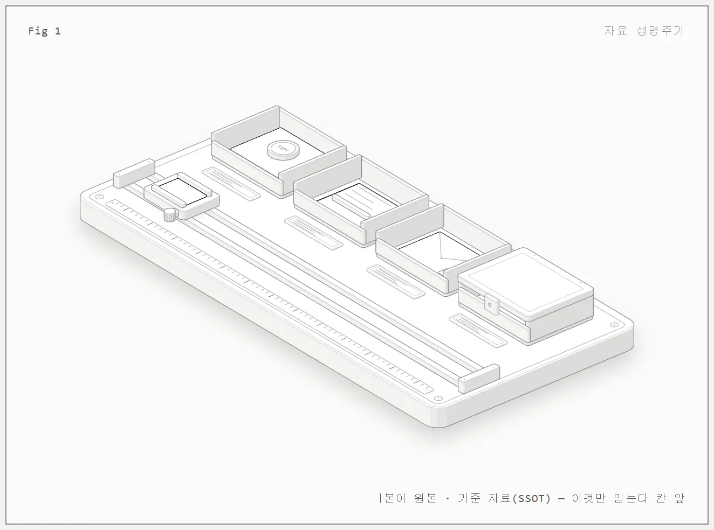
Fig 1 · 자료 생명주기 — 구조를 실물 기계로 본 그림. 마우스를 올리면 멈추고, 새 창으로 크게 보기.
오늘의 목표
과정 전체의 흐름을 알고, 업무 자료 한 묶음을 원본·작업본·공유본·백업으로 나눕니다. 그중 "이것만 믿는다"는 기준 자료와 개인정보가 든 자료를 가려냅니다.
오늘 손에 남는 것
자료 역할 분류지 한 장. 2차시에 완성할 산출물 ① 나의 자료관리 규칙표의 앞 절반으로, 규칙표의 '역할' 칸과 '민감도' 칸의 재료가 됩니다.
준비물
자료 역할 분류지(이 교안의 실습지), 펜
비식별 샘플 파일 목록(아래 '따라 하기'에 있습니다)
실습용 PC와 크롬, 구글 계정
과정 안내: 5차시부터 쓰는 AGY와 18차시부터 쓰는 GitHub Desktop은 강사가 실습 PC에 미리 설치해 둡니다. GitHub 계정은 18차시 전까지 집에서 만드는 사전 과제입니다(방법은 17차시 교안).
먼저 이해하기
과정 안내. 이 과정 20차시 동안 여러분은 「나의 업무함」이라는 개인 업무 자동화 웹앱 하나를 AI와 함께 키웁니다. 크롬으로 열기만 하면 돌아가는 작은 프로그램입니다. 첫 화면(대시보드)에서 새로 들어온 자료(Inbox) 건수, 검토를 기다리는 항목, 지식 카드 검색, 최근 산출물을 한눈에 봅니다.
1부(1~4차시) 자료관리와 업무 설계 — 종이·스프레드시트·제미나이로 규칙과 설계를 먼저 정합니다.
2부(5~8차시) Inbox를 만들다 — AI 코딩 도구 AGY를 처음 열고 입력·분류 화면을 만듭니다.
3부(9~12차시) 지식저장소와 대시보드
4부(13~16차시) 자동화 실행과 AI 초안
5부(17~20차시) 점검하고 공개하다 — GitHub에 기록하고 시연 페이지를 공개합니다.
짝수 차시마다 산출물이 하나씩 쌓입니다. ① 자료관리 규칙표 ② 업무자동화 설계서 ③ Inbox 화면 ④ 분류 흐름 ⑤ 지식저장소 ⑥ 개인 대시보드 ⑦ 실행 가능한 업무 프로세스 ⑧ 근거 표시 문서 ⑨ 비공개 저장소의 GitHub 기록 ⑩ 공개 시연 페이지와 개인 운영 규칙. 오늘은 그 첫 기초입니다.
자료에도 일생이 있습니다. 서류는 접수되고, 고쳐지고, 결재되어 나가고, 보존됩니다. 이것이 자료 생명주기(자료가 생겨서 쓰이고 보관되기까지의 흐름)입니다. 문서 대장을 관리해 본 분이라면 이미 아는 구조입니다. 그 흐름 속에서 같은 자료가 여러 벌로 늘어나므로, 각 벌에 역할 이름을 붙입니다.
원본 — 처음 받았거나 확정된, 손대지 않고 지키는 한 벌
작업본 · 공유본 · 백업 — 고치는 중인 복사본 · 남에게 보낸 시점의 판(메일 첨부 PDF 등) · 사고에 대비해 다른 곳에 둔 사본
SSOT — Single Source of Truth, 단일 기준 정보. 여러 벌 중 "이것만 믿는다"고 정한 하나. 보통 원본이 그 자리입니다
개인정보 경계 — 이름·연락처·주민번호처럼 사람을 알아볼 수 있는 정보가 든 자료를 따로 표시해 AI나 공개된 곳에 넣지 않는 선
따라 하기
가. 샘플 자료 읽기
아래는 가상 인물 한경수 씨(58세, 사회적협동조합 사무국 업무 지원)의 자료입니다.
A 20261007_운영위원회회의록_v02.hwp — 사무국 PC, 위원장 확인을 마친 판
B 회의록_수정중.hwp — 한경수 씨 노트북, 다음 회의 전에 고치는 중
C 20261007_운영위원회회의록_v02.pdf — 위원들에게 메일로 보낸 첨부
D 외장 하드 월말복사 폴더의 회의록 사본
E 가을 교육 신청서 스캔 12장 — 신청자 이름·연락처 포함
F 거래처가 메일로 보낸 견적서 PDF
나. 분류지 채우기
실습지의 '자료' 칸에 A~F를 한 줄씩 적습니다.
'역할' 칸에 원본·작업본·공유본·백업 중 하나를 적습니다.
→ 이렇게 보이면 됩니다: A는 원본, B는 작업본, C는 공유본, D는 백업. E와 F는 받은 그대로이므로 원본입니다.
회의록 네 벌(A~D) 중 SSOT 하나에 ○를 칩니다. A입니다. 회의록 내용을 물으면 A를 열어 답합니다.
'개인정보' 칸에 있음/없음을 적습니다. E는 '있음'입니다.
✖ 이렇게 되면: 회의록에도 이름이 있어 헷갈린다면 '모름'으로 적고 2차시 민감도 규칙에서 정합니다.
마지막 줄에 내 업무 자료 하나를 같은 방식으로 적어 봅니다. 파일 내용은 적지 않고 종류만 씁니다.
AI에게 건네는 말
어디에 입력하나요: PC에서 크롬을 열고 주소창에 https://gemini.google.com 을 입력해 들어갑니다. 구글 계정으로 로그인돼 있으면 화면 아래쪽에 입력칸이 보입니다. 그 칸을 누르고 아래 글을 붙여 넣은 뒤 Enter 를 누르세요. (줄을 바꿀 때는 Shift + Enter.) 답을 끝까지 읽고, 모르는 말은 "○○가 무슨 뜻이야?" 하고 이어서 묻습니다.
실제 고객 정보·주민번호·비밀번호·API 키(프로그램끼리 쓰는 비밀 열쇠)는 AI에 넣지 않습니다. 아래 글 다음 줄에 내 분류(A~F와 역할)만 이어 붙여 보냅니다.
업무 자료를 원본·작업본·공유본·백업으로 나누는 연습을 했어. 아래 내 분류를 보고, 역할이 틀렸을 수 있는 줄만 골라 이유를 한 줄씩 알려 줘. 정답을 바로 고쳐 쓰지 말고, 내가 다시 판단할 질문을 하나씩 붙여 줘. 개인정보가 있을 법한 자료가 있으면 따로 표시해 줘.
답을 읽고 동의한 곳만 분류지에 내 글씨로 고칩니다.
실습지
자료
역할(원본·작업본·공유본·백업)
SSOT(○)
개인정보(있음·없음·모름)
오늘의 확인
[ ] 20차시가 5부로 나뉘고 짝수 차시마다 산출물이 하나씩 나온다는 것을 말할 수 있다
[ ] 샘플 A~F에 역할을 하나씩 적었다
[ ] 회의록 네 벌 중 SSOT 하나에 ○를 쳤다
[ ] 개인정보가 든 자료를 '있음'으로 표시했다
[ ] 내 업무 자료 하나를 같은 방식으로 분류해 보았다
다음 차시 예고
오늘 분류를 바탕으로 파일명·폴더·민감도 규칙을 정하고, 자료 5건의 위치와 소유자를 적어 산출물 ① 나의 자료관리 규칙표를 완성합니다.
1부 · 자료관리와 업무 설계 · 2차시
2차시. 자료관리론: 저장 규칙과 자료 지도
📎 이 차시의 샘플 자료 받기
교실에서는 강사가 나눠 준 샘플자료 폴더를 씁니다. 집에서는 마이웨이 아카데미 C5 1강에 무료 회원으로 로그인하면 맨 위 「이 수업의 실습 자료」 상자에서 샘플자료.zip(회의록·견적서·신청서·사진 목록 등 12개)과 파일별로 내려받을 수 있습니다. 내 PC의 샘플자료 폴더에 풀어 두고 씁니다. 모두 학습용 가상 자료입니다.
파일명·폴더·민감도·기준 자료·백업 규칙 다섯 줄을 정하고, 자료 5건의 위치와 소유자를 자료 지도에 기록합니다.
오늘 손에 남는 것
산출물 ① 나의 자료관리 규칙표 — 구글 시트 한 파일에 '규칙' 5줄과 '자료지도' 5건을 담은 표. 이후 모든 차시가 이 규칙으로 자료를 다룹니다.
준비물
1차시 자료 역할 분류지
자료 지도 템플릿(이 교안의 실습지), 샘플 자료 5건
실습용 PC와 크롬(구글 시트 사용)
먼저 이해하기
인수인계를 받던 날을 떠올려 보세요. "회의록은 공유 폴더, 최종본은 날짜가 붙은 파일, 개인정보 서류는 잠금 캐비닛." 이 몇 줄이 있으면 처음 온 사람도 헤매지 않습니다. 오늘 만드는 규칙표가 바로 나와 AI에게 주는 인수인계서입니다. 5차시부터 AI 코딩 도구가 내 폴더를 다룰 때도 이 규칙을 그대로 건넵니다.
모르는 칸은 짐작하지 말고 '모름'으로 둡니다.
→ 이렇게 보이면 됩니다: 일곱 칸짜리 표 5줄이 채워져 있고, 민감 자료가 한눈에 보입니다.
같은 내용 종이 실습지에도 옮겨 적어 둡니다. 시트를 잃어도 다시 만들 수 있습니다.
AI에게 건네는 말
어디에 입력하나요: PC에서 크롬을 열고 주소창에 https://gemini.google.com 을 입력해 들어갑니다. 구글 계정으로 로그인돼 있으면 화면 아래쪽에 입력칸이 보입니다. 그 칸을 누르고 아래 글을 붙여 넣은 뒤 Enter 를 누르세요. (줄을 바꿀 때는 Shift + Enter.) 답을 끝까지 읽고, 모르는 말은 "○○가 무슨 뜻이야?" 하고 이어서 묻습니다.
실제 고객 정보·주민번호·비밀번호·API 키는 AI에 넣지 않습니다. 민감 자료는 자료 이름과 역할만 보냅니다. 규칙 탭 A1~B5와 자료지도 탭 표를 끌어 선택해 Ctrl + C 로 복사하고, 아래 글 다음 줄에 Ctrl + V 로 붙여 보냅니다.
아래는 내 자료관리 규칙 5줄과 자료지도 5건이다. 목적은 처음 보는 사람도 이 규칙만으로 파일을 같은 자리에 같은 이름으로 둘 수 있게 하는 것이다. ① 규칙 중 행동이 모호한 문장 ② 자료지도에서 규칙과 어긋나는 줄(파일명·민감도·SSOT 표시)을 찾아 표로 알려 줘. 표는 '위치 / 문제 / 내가 확인할 질문' 세 칸으로 하고, 규칙을 대신 새로 쓰지는 마.
답의 표를 보고 내가 동의한 곳만 고칩니다. 고쳤다면 파일 이름을 _v02 로 올립니다.
실습지
번호
자료 이름
역할
위치
소유자
민감도
SSOT
오늘의 확인
[ ] 구글 시트 날짜_자료관리규칙표_v01 에 규칙·자료지도 탭이 있다
[ ] R1~R5 다섯 규칙이 언제·어디에·무엇을이 보이는 문장이다
[ ] 자료지도 5건에 위치와 소유자가 적혀 있고, 모르는 칸은 '모름'이다
[ ] 민감 자료가 하나 이상 표시돼 있다
[ ] 제미나이가 짚은 곳 중 동의한 것만 고쳤다
다음 차시 예고
규칙이 섰으니 이제 일을 봅니다. 반복 업무 하나를 골라 입력→판단→처리→출력으로 쪼개고, 걸리는 시간과 예외를 업무 프로세스 맵에 적습니다.
1부 · 자료관리와 업무 설계 · 3차시
3차시. 업무자동화 설계: 반복 업무 분석
오늘의 목표
자동화할 반복 업무 1개를 고르고, 입력→판단→처리→출력 네 단계와 단계별 소요 시간·예외 상황을 업무 프로세스 맵 한 장에 정리합니다.
오늘 손에 남는 것
업무 프로세스 맵 한 장. 4차시에 완성할 산출물 ② 업무자동화 설계서의 앞 절반으로, 설계서의 '입력', '자동화 규칙', '예외 처리' 항목이 이 맵에서 나옵니다.
준비물
업무 분석 워크시트(이 교안의 실습지), 펜
2차시 산출물 ① 나의 자료관리 규칙표
실습용 PC와 크롬
먼저 이해하기
자동화는 화면부터 만드는 일이 아닙니다. 일이 어디서 들어와, 어디서 판단하고, 무엇으로 나가는지를 먼저 적어야 AI도 제대로 만들 수 있습니다. 결재 서류가 기안→검토→결재→시행→보관으로 흐르듯, 대부분의 사무 업무는 네 단계로 쪼개집니다.
입력: 무엇이 어디로 들어오는가 (메일로 온 신청서)
판단: 무엇을 보고 결정하는가 (정원이 남았나, 빠진 칸은 없나)
처리: 누가 무엇을 하는가 (명단에 옮겨 적는다)
출력: 무엇이 남거나 나가는가 (접수 명단, 확인 회신)
자동화하기 좋은 일은 네 가지 조건 중 셋 이상에 해당합니다. 자주 한다 · 순서가 늘 같다 · 시간이 꽤 든다 · 옮겨 적다 실수가 난다. 반대로 사람의 판단이 매번 다른 일, 밖으로 돈이나 약속이 나가는 일은 사람 손에 남깁니다.
오늘 그린 맵은 「나의 업무함」의 뼈대가 됩니다. '입력' 칸은 6차시 Inbox 입력 화면으로, '판단' 칸은 7~8차시 분류 기준과 처리 상태로, ★를 친 단계는 14차시 승인 버튼으로 이어집니다. 그러니 지금 정확히 적어 둘수록 나중에 AI에게 덜 설명해도 됩니다.
반복 업무 — 같은 순서로 주기적으로 되풀이하는 일
업무 프로세스 맵 — 일의 단계를 순서대로 칸에 적은 한 장짜리 그림표
소요 시간 — 한 건을 처리하는 데 드는 시간. 자동화 전후를 비교하는 기준값이 됩니다
예외 — 평소 순서대로 갈 수 없는 경우 (서류 누락, 중복 신청, 정원 초과 등)
따라 하기
가. 업무 고르기
지난 한 달 동안 세 번 이상 한 일을 세 개 적습니다. 떠오르지 않으면 아래 예에서 고릅니다.
한경수 씨: 교육 신청서 접수, 회의록 정리, 견적서 비교
오미선 씨(52세, 1인 교육사업 준비): 상담 문의 메일 정리, 수강생 출석 집계
위의 네 조건(자주·같은 순서·시간·실수)에 해당하는 개수를 옆에 적고, 가장 많은 것 하나에 ○를 칩니다.
→ 이렇게 보이면 됩니다: 한경수 씨는 '교육 신청서 접수'(네 조건 모두)를 골랐습니다.
나. 네 단계로 쪼개기
실습지 '단계' 줄에 입력·판단·처리·출력을 적고, 각 칸에 '무엇을'과 '누가'를 적습니다. 한경수 씨의 예입니다.
입력: 신청서가 메일 첨부로 온다 / 신청자
판단: 빠진 칸·중복 신청·정원 확인 / 한경수
처리: 접수 명단 시트에 옮겨 적는다 / 한경수
출력: 접수 명단 갱신, 확인 메일 회신 / 한경수
단계마다 한 건에 걸리는 분을 적습니다. 한경수 씨는 1건에 판단 3분, 처리 5분, 회신 2분, 주 20건이니 주 200분입니다.
단계마다 예외를 하나 이상 적습니다. 예: "연락처 칸이 비어 있음", "같은 사람이 두 번 보냄".
✖ 이렇게 되면: 예외가 떠오르지 않으면 "지난번에 다시 물어본 적이 있는 일"을 떠올려 보세요. 그것이 예외입니다.
각 단계 자료의 민감도를 규칙표 R3에 맞춰 적습니다. 신청서는 이름·연락처가 있으니 '민감'입니다.
마지막으로 "이 단계는 꼭 내가 본다"는 곳에 별표(★)를 칩니다. 4차시 '사람 승인 지점'이 됩니다.
AI에게 건네는 말
어디에 입력하나요: PC에서 크롬을 열고 주소창에 https://gemini.google.com 을 입력해 들어갑니다. 구글 계정으로 로그인돼 있으면 화면 아래쪽에 입력칸이 보입니다. 그 칸을 누르고 아래 글을 붙여 넣은 뒤 Enter 를 누르세요. (줄을 바꿀 때는 Shift + Enter.) 답을 끝까지 읽고, 모르는 말은 "○○가 무슨 뜻이야?" 하고 이어서 묻습니다.
실제 신청자 이름·연락처·주민번호, 비밀번호·API 키는 넣지 않습니다. 업무의 순서만 적어 보냅니다. 아래 글 다음 줄에 내 네 단계를 이어 적어 보냅니다.
너는 사무 업무 분석가다. 아래는 내가 반복하는 업무를 입력·판단·처리·출력 네 단계로 적은 것이다. 내가 놓쳤을 수 있는 예외 상황을 단계마다 두 개씩 질문 형태로 물어봐 줘. 내가 적지 않은 단계를 새로 만들지 말고, 답은 '단계 / 놓쳤을 수 있는 예외 / 확인 질문' 세 칸 표로 줘.
질문에 "그런 일 있다"고 답할 수 있는 것만 실습지 '예외' 칸에 더 적습니다.
실습지
단계
무엇을
누가
1건 소요 시간(분)
예외 상황
민감도
★
입력
판단
처리
출력
업무 이름: __ 주기(주 몇 건): _ 주당 총 소요 시간: ___ 분
오늘의 확인
[ ] 반복 업무 1개를 네 조건으로 따져서 골랐다
[ ] 입력·판단·처리·출력 네 칸에 무엇을·누가가 적혀 있다
[ ] 단계별 소요 시간과 주당 총 시간을 분으로 적었다
[ ] 단계마다 예외가 하나 이상 있다
[ ] 내가 꼭 볼 단계에 ★를 쳤다
다음 차시 예고
오늘의 맵을 트리거·조건·액션이라는 AI가 알아듣는 문장으로 바꾸고, 사람 승인 지점과 수용 기준을 더해 산출물 ② 업무자동화 설계서를 완성합니다.
1부 · 자료관리와 업무 설계 · 4차시
4차시. 업무자동화 설계: AI 요구사항 명세
오늘의 목표
3차시 업무 프로세스 맵을 트리거·조건·액션 문장으로 바꾸고, 사람 승인 지점과 수용 기준을 더해 AI에게 건넬 설계서 한 장을 완성합니다.
오늘 손에 남는 것
산출물 ② 업무자동화 설계서 — 7개 항목(1항 업무 이름 ~ 7항 수용 기준)으로 된 구글 문서 한 장. 5차시부터 AGY에게 일을 시킬 때마다 이 설계서를 함께 건네고, 결과는 7항 수용 기준으로 점검합니다.
준비물
3차시 업무 프로세스 맵, 2차시 자료관리 규칙표
설계서 템플릿(이 교안의 실습지)
실습용 PC, 크롬, 제미나이(생성형 AI 도구)
먼저 이해하기
새로 온 직원에게 일을 맡길 때 "알아서 잘"이라고 하면 결과가 매번 다릅니다. "신청서가 오면, 빈칸이 있을 때는, 접수하지 말고 나에게 넘겨"라고 해야 같은 결과가 나옵니다. AI도 같습니다. 요구사항 명세(만들 것이 무엇을 해야 하는지 적은 글)는 AI에게 주는 업무 지시서입니다.
자동화 규칙은 세 토막으로 씁니다. "Inbox에 새 항목이 저장될 때(트리거) 민감도가 '민감'이면(조건) 상태를 '검토'로 두고 승인 대기 목록에 올린다(액션)." 이 문장은 13차시에 실제 기능이 됩니다.
설계서는 다음 7개 항목으로 고정합니다.
1항 업무 이름과 한 문장 — 무엇을, 얼마나 자주, 어디까지 자동으로, 확인은 누가
2항 입력과 넣지 않을 것 — 무엇이 Inbox에 들어오는가, 들어오면 안 되는 것은 무엇인가
3항 자동화 규칙 — 트리거·조건·액션 문장 2개 이상
4항 사람 승인 지점 — 어디서 멈추고, 누가, 무엇을 보고 승인·반려하는가
5항 출력과 기록 — 승인하면 무엇이 바뀌고, 어디에 기록이 남는가
6항 예외 처리 — 입력이 잘못되거나 일이 실패하면 어떻게 하는가
7항 수용 기준 — AC-1, AC-2…로 번호를 붙인 확인 문장 3개 이상
트리거 · 조건 · 액션 — 언제(새 항목 저장 시) · 어떤 경우(민감도가 '민감'이면) · 무엇을(상태를 '검토'로)
사람 승인 지점 — 자동화가 멈추고 사람이 승인·반려를 결정하는 곳. 밖으로 나가는 일, 되돌릴 수 없는 일 앞에 둡니다
수용 기준 — Acceptance Criteria(AC). "이렇게 되면 완성"을 직접 눌러 보고 예·아니오로 답할 수 있게 쓴 문장
따라 하기
가. 설계서 문서 만들기
크롬 주소창에 https://docs.google.com 을 입력하고 '빈 문서'를 누릅니다.
왼쪽 위 '제목 없는 문서'를 누르고 20261020_업무자동화설계서_v01 (오늘 날짜로)을 입력한 뒤 Enter 를 누릅니다. (화면의 글자는 버전에 따라 조금 다를 수 있습니다.)
1항~7항 제목을 한 줄씩 먼저 적습니다.
→ 이렇게 보이면 됩니다: 번호 붙은 제목 7줄이 세로로 놓여 있습니다.
나. 3차시 맵을 옮겨 적기 — 한경수 씨의 교육 신청서 접수를 예로 듭니다.
1항: "주 20건 오는 교육 신청서를 Inbox에 등록하면 빈칸·중복·민감 여부를 앱이 먼저 가르고, 접수 확정은 내가 한다."
2항: 맵의 '입력' 칸을 옮깁니다. Inbox에는 신청서의 제목·유입일·원본 위치만 적고, 이름·연락처 같은 내용은 적지 않습니다(규칙표 R3).
3항: 맵의 '판단' 칸을 트리거·조건·액션으로 바꿉니다.
규칙 1: 새 항목이 저장될 때 / 민감도가 '민감'이면 / 상태를 '검토'로 두고 승인 대기 목록에 올린다
규칙 2: '등록'을 누를 때 / 제목이나 유입일이 비어 있으면 / 저장하지 않고 이유를 화면에 보인다
4항: 맵에서 ★를 친 단계를 적습니다. "검토 상태 항목은 처리자(나)가 원본을 열어 본 뒤 보관 또는 반려를 누르고, 처리 근거를 한 줄 쓴다."
5항: "상태가 '보관' 또는 '반려'로 바뀌고, 실행 기록에 시각·항목·결정·이유·처리자가 한 줄 남는다."
6항: 맵의 '예외' 칸을 옮깁니다. "같은 제목이 이미 있으면 중복 여부(아니오/의심/중복)를 '의심'으로 표시하고 저장 전에 알린다."
다. 수용 기준 먼저 쓰기
7항에 AC를 3개 이상 씁니다. 앞으로 AI에게 요청하기 전에 늘 이것부터 적습니다.
AC-1: 신청서 1건을 입력하고 '등록'을 누르면 목록에 '신규'로 다시 보인다
AC-2: 민감도를 '민감'으로 등록하면 상태가 '검토'로 바뀌어 승인 대기 목록에 나타난다
AC-3: 제목을 비우고 '등록'을 누르면 저장되지 않고 이유가 보인다
AC-4: 승인 또는 반려하면 기록에 결정과 이유가 한 줄 남는다
✖ 이렇게 되면: "편리하다", "빠르다"처럼 눌러서 확인할 수 없는 문장은 "○○하면 ○○가 보인다"로 고칩니다.
AI에게 건네는 말
어디에 입력하나요: PC에서 크롬을 열고 주소창에 https://gemini.google.com 을 입력해 들어갑니다. 구글 계정으로 로그인돼 있으면 화면 아래쪽에 입력칸이 보입니다. 그 칸을 누르고 아래 글을 붙여 넣은 뒤 Enter 를 누르세요. (줄을 바꿀 때는 Shift + Enter.) 답을 끝까지 읽고, 모르는 말은 "○○가 무슨 뜻이야?" 하고 이어서 묻습니다.
실제 고객 정보·주민번호·비밀번호·API 키는 넣지 않습니다. 설계서 문서에서 Ctrl + A → Ctrl + C 로 전체를 복사해 아래 글 다음 줄에 붙여 보냅니다.
너는 업무 자동화 요구사항을 검토하는 분석가다. 아래 내 설계서를 읽고, 고쳐 쓰기 전에 빈칸이나 모호한 곳을 질문으로 한 번에 하나씩 물어봐 줘. 특히 ① 3항 규칙마다 트리거·조건·액션이 모두 있는지 ② 밖으로 나가거나 되돌릴 수 없는 일 앞에 4항 승인 지점이 있는지 ③ 7항 수용 기준을 눌러서 예·아니오로 확인할 수 있는지를 먼저 봐. 내가 '모름'이라고 답한 곳은 추측으로 채우지 말고 '확인 필요'로 남겨.
질문이 끝나면 같은 대화창에 이어 보냅니다.
내 답을 반영해 설계서를 1항~7항 순서 그대로 정리해 줘. 내가 말하지 않은 기능은 더하지 마.
정리본에 내가 말하지 않은 기능(예: 자동 메일 발송)이 끼어 있으면 "○○는 빼 줘"라고 보냅니다. 괜찮으면 복사해 새 문서 날짜_업무자동화설계서_v02 에 붙입니다. v01 은 지우지 않습니다.
실습지
항목
나의 설계 (한두 문장)
1항 업무 이름과 한 문장
2항 입력과 넣지 않을 것
3항 자동화 규칙(트리거·조건·액션)
4항 사람 승인 지점
5항 출력과 기록
6항 예외 처리
7항 수용 기준(AC-1~)
오늘의 확인
[ ] 설계서가 1항~7항 순서로 채워져 있다
[ ] 3항 규칙 2개 이상에 트리거·조건·액션이 모두 있다
[ ] 4항에 누가, 무엇을 보고 승인·반려하는지 적혀 있다
[ ] 7항 수용 기준이 3개 이상이고 모두 눌러서 확인할 수 있는 문장이다
[ ] v01(내가 쓴 판)과 v02(AI 검토 반영판)가 모두 남아 있다
다음 차시 예고
2부가 시작됩니다. AI 코딩 도구 AGY를 처음 열어 workbox 폴더를 만들고, 오늘의 설계서와 규칙표를 docs 폴더에 옮겨 둔 뒤 첫 화면을 크롬에서 열어 봅니다.
2부 · Inbox를 만들다 · 5차시
5차시. 시스템 구축 ①: 프로젝트 구조와 AI 협업
📎 이 차시의 샘플 자료 받기
교실에서는 강사가 나눠 준 샘플자료 폴더를 씁니다. 집에서는 마이웨이 아카데미 C5 1강에 무료 회원으로 로그인하면 맨 위 「이 수업의 실습 자료」 상자에서 샘플자료.zip(회의록·견적서·신청서·사진 목록 등 12개)과 파일별로 내려받을 수 있습니다. 내 PC의 샘플자료 폴더에 풀어 두고 씁니다. 모두 학습용 가상 자료입니다.
오늘의 목표
AI 코딩 도구 AGY를 처음 열어 workbox 폴더를 연결하고, 「나의 업무함」의 빈 뼈대(폴더와 파일)를 AGY에게 만들게 합니다. 만들어진 첫 화면을 크롬에서 직접 열어 확인합니다.
오늘 손에 남는 것
다음 차시 산출물 ③ Inbox 화면의 앞 절반입니다. Inbox 화면이 들어갈 자리(inbox.html)와 자료를 담을 폴더(data, knowledge, outputs, docs)가 내 PC에 생기고, 크롬에서 열리는 것까지 확인합니다.
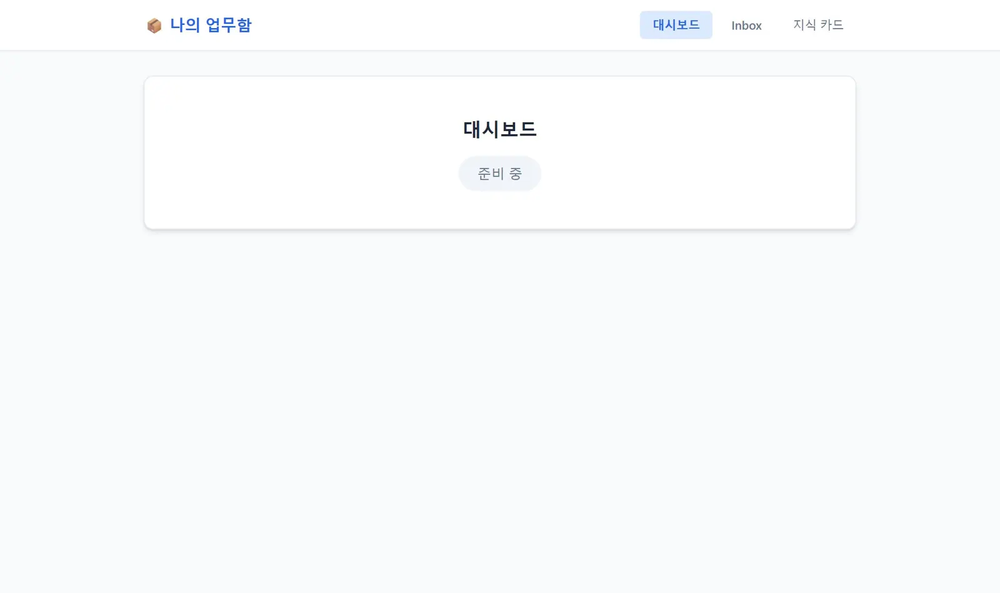
5차시를 마친 화면 — 시범 실행에서 실제로 만든 모습(가상 자료). 내 화면은 모양이 조금 달라도 됩니다.
준비물
실습용 PC (AGY와 GitHub Desktop 설치는 강사가 미리 마쳤습니다)
AGY에 로그인할 구글 계정과 비밀번호
강사가 나눠 준 샘플자료 폴더(C:\사용자\(내 계정 이름)\샘플자료, workbox 밖에 둡니다)
2차시 규칙표(구글 시트), 4차시 설계서(구글 문서)
먼저 이해하기
이사 갈 집을 꾸밀 때 가구부터 들이지 않습니다. 방마다 이름을 붙이고 무엇을 둘지 정한 다음에 짐을 옮깁니다. 오늘은 「나의 업무함」의 방을 나누는 날입니다. 접수 기록의 저장본은 data, 지식 카드는 knowledge, 완성 문서는 outputs, 1~4차시에 만든 규칙표와 설계서는 docs에 둡니다. 원본 자료는 샘플자료 폴더에 그대로 둡니다. 산출물 화면 outputs.html 과 산출물 목록 data/outputs.js 는 15차시에 더해집니다.
방을 나누는 일은 AGY에게 맡깁니다. 결재와 같은 구조입니다. 기안은 AGY가 하고, 결재는 내가 합니다. 나는 무엇을 만들지 말로 정하고, AGY의 계획과 권한 카드를 읽고 허락하고, 결과를 직접 열어 봅니다. 이렇게 사람과 AI가 짝이 되어 코드를 만드는 방식을 AI 페어 프로그래밍이라고 부릅니다.
AGY는 요청 하나에 짧으면 1~2분, 길면 10분 넘게 일합니다. 기다리는 동안 실습지를 채웁니다. 또 AGY는 사람마다 조금씩 다르게 만듭니다. 스크립트를 app.js 하나에 두기도 하고 inbox.js, knowledge.js 처럼 화면별로 나누기도 합니다. 이 교안에서 app.js 라고 쓴 곳은 "AGY가 만든 .js 파일들"로 읽으면 됩니다. 고치기 전 원본을 inbox.html.bak 처럼 따로 남겨 두기도 하는데, 이 파일은 17차시 점검 때 정리합니다.
AGY(Antigravity) — 구글의 AI 코딩 도구. 연결해 준 폴더 안의 파일을 직접 만들고 고칩니다.
HTML — 웹 화면의 뼈대를 적는 파일 형식. 크롬으로 열면 화면이 됩니다.
Local Mode — AGY가 연결된 폴더의 진짜 파일을 그 자리에서 바로 고치는 작업 방식.
권한 확인 카드 — AGY가 파일을 만들거나 명령을 실행하기 전에 허락을 묻는 작은 네모 칸.
따라 하기
가. 빈 작업 폴더 만들기
Windows 키 + E 로 파일 탐색기를 엽니다.
위쪽 주소 표시줄을 누르고 %USERPROFILE% 를 입력한 뒤 Enter 를 누릅니다.
→ 이렇게 보이면 됩니다: 내 계정 폴더가 열리고 '문서', '다운로드' 같은 폴더가 보입니다.
빈 곳에서 마우스 오른쪽 단추 → '새로 만들기' → '폴더'를 누르고 이름을 workbox 로 적은 뒤 Enter 를 누릅니다. 경로는 C:\사용자\(내 계정 이름)\workbox 입니다. 「나의 업무함」은 앱을 부르는 이름입니다.
나. AGY에 로그인하고 workbox 연결하기
'시작' 단추를 누르고 Antigravity 를 쳐서 AGY를 엽니다.
로그인 화면이 나오면 구글 계정으로 로그인합니다. 크롬 창이 열려 계정을 고르라고 하면 내 계정을 누르고, 끝나면 AGY 창으로 돌아옵니다. (화면의 글자는 버전에 따라 조금 다를 수 있습니다.)
→ 이렇게 보이면 됩니다: 왼쪽에 세로로 긴 사이드바가 있는 AGY 첫 화면.
사이드바에서 '+'가 붙은 폴더 모양 아이콘 → 'New Project' → 'Add Folder'를 차례로 누릅니다.
폴더 고르기 창에서 workbox 를 한 번 눌러 선택하고 '폴더 선택'을 누릅니다. 안으로 들어가지 않습니다.
목록에 workbox 한 줄만 있는지 보고 'Create'를 누릅니다.
→ 이렇게 보이면 됩니다: 왼쪽 사이드바에 workbox 프로젝트가 생깁니다.
다. 뼈대를 만들게 하고 크롬에서 열기
아래 'AI에게 건네는 말'을 보내기 전에, 실습지 위쪽에 수용 기준(이렇게 되면 완성) 세 줄을 먼저 적습니다.
요청문을 보냅니다. 작업 방식을 물으면 'Local Mode'를 고릅니다.
→ 이렇게 보이면 됩니다: AGY가 만들 폴더와 파일 목록(계획)을 보여 주고 "진행할까요?"처럼 묻고 멈춥니다. 아직 아무 파일도 생기지 않았습니다.
계획이 요청과 맞는지 읽은 뒤, 같은 입력칸에 계획대로 진행해 줘. 라고 보냅니다. 이후 차시에서도 AGY가 계획만 보여 주고 멈추면 같은 방법으로 진행시킵니다.
권한 확인 카드가 나오면 동작(폴더·파일 만들기)과 대상(workbox 안)을 읽고, 둘 다 맞을 때만 허락합니다.
✖ 대상에 바탕화면이나 다른 폴더가 보이면: 거절하고 "workbox 폴더 안에서만 해 줘"라고 보냅니다.
탐색기로 돌아가 workbox 안에서 F5 를 누릅니다.
→ 이렇게 보이면 됩니다: 폴더 4개(data, knowledge, outputs, docs)와 파일 5개(index.html, inbox.html, knowledge.html, app.js, style.css), README.md 가 보입니다.
index.html 을 마우스 오른쪽 단추 → '연결 프로그램' → 'Google Chrome'으로 엽니다.
→ 이렇게 보이면 됩니다: 주소창이 file:///C:/Users/... 로 시작하고 '나의 업무함' 제목이 보입니다.
위쪽 메뉴의 'Inbox'를 눌러 inbox.html 로 넘어가는지 봅니다.
2차시 규칙표와 4차시 설계서를 docs 폴더로 옮깁니다.
구글 시트(규칙표)와 구글 문서(설계서)에서 각각 '파일' → '다운로드' → 'PDF 문서(.pdf)'를 누릅니다. 설계서는 'Microsoft Word(.docx)'로 받아도 됩니다.
탐색기 왼쪽 '다운로드'에서 받은 파일을 workbox\docs 로 끌어다 놓습니다.
AI에게 건네는 말
어디에 입력하나요: '시작' 단추를 누르고 Antigravity 를 쳐서 AGY를 엽니다. 왼쪽에 workbox 프로젝트가 열려 있는지 먼저 봅니다. 화면 아래쪽 채팅 입력칸(에이전트에게 말을 거는 칸)을 누르고 아래 글을 붙여 넣은 뒤 Enter 로 보냅니다. AGY가 계획이나 권한 확인 카드를 먼저 보여 주면, 무엇을(동작) 어디에(대상) 하려는지 읽고 workbox 폴더 안의 일일 때만 허락합니다.
지금 연결된 workbox 폴더 안에 개인 업무 자동화 웹앱 「나의 업무함」의 뼈대를 만들어 줘. 서버나 설치 없이 크롬으로 파일을 열면 돌아가는 HTML·CSS·JavaScript만 써. 폴더는 data, knowledge, outputs, docs 네 개, 파일은 index.html(첫 화면), inbox.html, knowledge.html, app.js, style.css, README.md야. 세 화면 위쪽에 서로 오가는 메뉴(대시보드·Inbox·지식 카드)를 두고, 내용은 "준비 중" 한 줄이면 돼. README.md에는 폴더마다 무엇을 두는지 한 줄씩 적어 줘. workbox 밖은 건드리지 말고, 시작 전에 계획을 먼저 보여 줘. 확인용 테스트 스크립트는 따로 만들거나 실행하지 마.
실제 고객 정보·주민번호·비밀번호·API 키는 AI에게도, 이 폴더에도 넣지 않습니다.
실습지
구분
내가 적을 내용
확인(☐)
수용 기준 1
수용 기준 2
수용 기준 3
권한 카드에 나온 동작·대상
내가 고른 것(허락/거절)과 이유
크롬 주소창에 보인 주소 앞부분
오늘의 확인
[ ] AGY 왼쪽에 workbox 프로젝트 하나만 연결돼 있다.
[ ] 권한 카드의 동작과 대상을 읽고 나서 허락했다.
[ ] 탐색기에서 폴더 4개와 파일 6개를 직접 확인했다.
[ ] 크롬에서 index.html 을 열고 Inbox 화면으로 넘어갔다.
[ ] docs 에 규칙표와 설계서를 넣었다.
다음 차시 예고
빈 inbox.html 에 입력칸을 붙입니다. 자료 한 건을 등록하고, 창을 닫았다 열어도 다시 보이게 만듭니다.
2부 · Inbox를 만들다 · 6차시
6차시. 시스템 구축 ②: Inbox 입력 화면
📎 이 차시의 샘플 자료 받기
교실에서는 강사가 나눠 준 샘플자료 폴더를 씁니다. 집에서는 마이웨이 아카데미 C5 1강에 무료 회원으로 로그인하면 맨 위 「이 수업의 실습 자료」 상자에서 샘플자료.zip(회의록·견적서·신청서·사진 목록 등 12개)과 파일별로 내려받을 수 있습니다. 내 PC의 샘플자료 폴더에 풀어 두고 씁니다. 모두 학습용 가상 자료입니다.
inbox.html 에 제목·유입일·원본 위치·상태를 입력하는 화면을 만듭니다. 등록한 자료가 창을 닫았다 열어도 다시 보이고, '내보내기'로 파일에 저장되게 합니다.
오늘 손에 남는 것
산출물 ③ Inbox 화면 — 샘플 자료 1건을 등록하고, 다시 열었을 때 제목·유입일·원본 위치·상태를 그대로 확인할 수 있는 화면입니다.
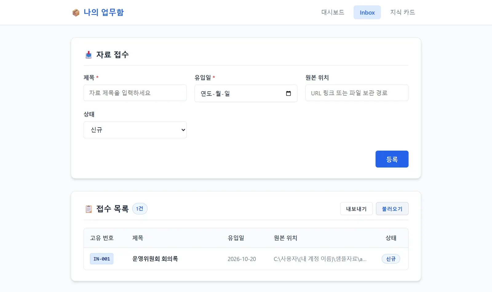
6차시를 마친 화면 — 시범 실행에서 실제로 만든 모습(가상 자료). 내 화면은 모양이 조금 달라도 됩니다.
준비물
5차시에 만든 workbox 폴더와 AGY 프로젝트
크롬 브라우저
샘플 자료: 샘플자료 폴더의 한경수 씨 「10월 운영위원회 회의록」(가상, 20261007_운영위원회회의록_v02)
4차시 설계서의 수용 기준
먼저 이해하기
총무 일을 해 본 분이라면 문서 접수 대장을 기억할 것입니다. 들어온 문서를 바로 처리하지 않고, 먼저 대장에 한 줄 적습니다. 언제 왔는지, 무엇인지, 원본은 어디 있는지, 지금 어느 단계인지. Inbox(받은 자료를 처리 전에 일단 모아 두는 접수함)는 이 접수 대장을 화면으로 옮긴 것입니다.
Inbox 한 건에 적을 칸은 오늘 열 개로 확정합니다. 이후 모든 차시가 이 열 칸을 함께 씁니다.
제목 · 유입일 · 원본 위치 · 유형 · 태그 · 민감도 · 중복 여부 · 상태 · 처리 근거 · 처리자
여기에 앱이 항목마다 고유 번호(IN-001, IN-002 …)를 처음부터 자동으로 붙입니다. 접수 번호처럼 한 번 붙으면 바뀌지 않아, 14차시 승인 때 대상을 정확히 가리킵니다.
오늘은 앞의 네 칸(제목·유입일·원본 위치·상태)만 화면에 붙입니다. 유형·태그·민감도·중복 여부는 7차시, 처리 근거·처리자는 8차시에 더합니다. 대장 양식은 한 번에 정하되, 칸은 하나씩 채워 가는 것입니다.
입력한 내용은 크롬 안의 작은 저장 공간에 남습니다. 다만 이 공간은 크롬 방문 기록을 지우면 함께 사라집니다. 그래서 '내보내기'로 data/inbox.json 파일에 따로 저장해 둡니다. 크롬 저장소는 책상 위 메모, 내보낸 파일은 문서함에 넣은 원본이라고 생각하면 됩니다.
localStorage — 크롬 안에 페이지별로 남는 작은 저장 공간. 방문 기록을 지우면 사라집니다.
JSON — 이름과 값을 짝지어 적는 글자 형식의 데이터 파일. 메모장으로 열어 읽을 수 있습니다.
원본 위치 — 실제 자료가 있는 곳(파일이면 파일 이름까지). 예) C:\사용자\(내 계정 이름)\샘플자료\20261007_운영위원회회의록_v02 또는 메일함 > 거래처
따라 하기
가. 수용 기준부터 적기
실습지에 오늘의 수용 기준을 적습니다. 예) "제목을 비우고 '등록'을 누르면 저장되지 않고 이유가 보인다." 4차시 설계서의 수용 기준과 겹치는 것은 그대로 옮깁니다.
나. 입력 화면 만들기
AGY에서 workbox 프로젝트를 열고 아래 요청 1을 보냅니다.
AGY가 보여 주는 계획에서 고칠 파일이 inbox.html, app.js, style.css 안에 있는지 읽고 허락합니다.
탐색기에서 inbox.html 을 크롬으로 엽니다. 이미 열려 있으면 F5 를 누릅니다.
→ 이렇게 보이면 됩니다: 제목·유입일·원본 위치·상태 입력칸과 '등록' 단추, 아래쪽에 빈 목록.
샘플을 입력합니다. 제목 20261007_운영위원회회의록_v02, 유입일 2026-10-07, 원본 위치 C:\사용자\(내 계정 이름)\샘플자료\20261007_운영위원회회의록_v02, 상태 '신규'. '등록'을 누릅니다.
→ 이렇게 보이면 됩니다: 아래 목록에 고유 번호 IN-001 이 붙은 한 줄이 생깁니다.
크롬 창을 닫고 inbox.html 을 다시 엽니다.
→ 이렇게 보이면 됩니다: 방금 등록한 한 줄이 그대로 있습니다.
✖ 목록이 비어 있으면: AGY에게 "다시 열면 목록이 사라져. 저장된 목록을 처음에 불러오는 부분만 고쳐 줘"라고 한 가지만 요청합니다.
다. 내보내기와 불러오기
요청 2를 보내고, 같은 방식으로 계획과 권한 카드를 읽은 뒤 허락합니다.
크롬에서 F5 를 누르고 '내보내기'를 누릅니다.
→ 이렇게 보이면 됩니다: 크롬 오른쪽 위에 다운로드 표시가 뜨고 inbox.json 이 받아집니다.
탐색기 왼쪽 '다운로드'에서 inbox.json 을 workbox\data 로 끌어다 놓습니다. 이미 있으면 '대상 파일 덮어쓰기'를 고릅니다.
✖ 이름이 inbox (1).json 이면: F2 로 inbox.json 으로 바꾼 뒤 옮깁니다.
data\inbox.json 을 메모장으로 열어 회의록 제목이 보이는지 읽고 닫습니다.
'불러오기'를 눌러 data\inbox.json 을 고릅니다.
→ 이렇게 보이면 됩니다: 목록이 파일 내용대로 다시 그려집니다.
AI에게 건네는 말
어디에 입력하나요: '시작' 단추를 누르고 Antigravity 를 쳐서 AGY를 엽니다. 왼쪽에 workbox 프로젝트가 열려 있는지 먼저 봅니다. 화면 아래쪽 채팅 입력칸(에이전트에게 말을 거는 칸)을 누르고 아래 글을 붙여 넣은 뒤 Enter 로 보냅니다. AGY가 계획이나 권한 확인 카드를 먼저 보여 주면, 무엇을(동작) 어디에(대상) 하려는지 읽고 workbox 폴더 안의 일일 때만 허락합니다.
요청 1:
inbox.html에 자료 접수 화면을 만들어 줘. 입력칸은 제목, 유입일(날짜 고르기), 원본 위치, 상태(신규·검토·보관·반려 중 고르기, 처음 값은 신규) 네 개야. '등록'을 누르면 항목마다 바뀌지 않는 고유 번호(IN-001, IN-002처럼 차례로)를 자동으로 붙여 아래 목록에 한 줄씩 쌓이고, 크롬 localStorage에 저장돼서 창을 다시 열어도 보여야 해. 제목이나 유입일이 비어 있으면 저장하지 말고 무엇이 비었는지 화면에 알려 줘. 나중에 유형·태그·민감도·중복 여부·처리 근거·처리자 칸을 더할 거니까 그 자리를 생각해서 만들어 줘. 다 되면 내가 크롬에서 확인할 순서를 세 줄로 알려 줘. 확인용 테스트 스크립트는 따로 만들거나 실행하지 마.
요청 2:
inbox.html에 '내보내기'와 '불러오기' 단추를 더해 줘. 내보내기는 지금 목록 전체를 inbox.json 파일로 내려받게 하고, 불러오기는 내가 고른 inbox.json으로 목록을 바꿔 줘. 불러오기 전에 "지금 목록이 바뀝니다"라고 한 번 묻게 해 줘. 다른 기능은 바꾸지 마. 확인용 테스트 스크립트는 따로 만들거나 실행하지 마.
실제 고객 정보·주민번호·비밀번호·API 키는 AI에게도, 입력칸에도 넣지 않습니다.
실습지
수용 기준 (이렇게 되면 완성)
크롬에서 해 본 일
결과(☐ 됨 / ✖ 안 됨)
오늘의 확인
[ ] 요청 전에 수용 기준을 세 줄 이상 적었다.
[ ] 샘플 1건이 창을 닫았다 열어도 목록에 남아 있다.
[ ] 제목을 비우고 '등록'을 눌러 저장이 막히는 것을 보았다.
[ ] workbox\data\inbox.json 을 메모장으로 열어 내용을 읽었다.
[ ] '불러오기'로 목록이 되살아나는 것을 확인했다.
다음 차시 예고
자료에 꼬리표를 붙입니다. 유형·태그·민감도·중복 여부를 더하고, 어떤 자료를 어떻게 분류할지 기준표를 만듭니다.
2부 · Inbox를 만들다 · 7차시
7차시. 시스템 구축 ③: 메타데이터·분류 기준
📎 이 차시의 샘플 자료 받기
교실에서는 강사가 나눠 준 샘플자료 폴더를 씁니다. 집에서는 마이웨이 아카데미 C5 1강에 무료 회원으로 로그인하면 맨 위 「이 수업의 실습 자료」 상자에서 샘플자료.zip(회의록·견적서·신청서·사진 목록 등 12개)과 파일별로 내려받을 수 있습니다. 내 PC의 샘플자료 폴더에 풀어 두고 씁니다. 모두 학습용 가상 자료입니다.
오늘의 목표
Inbox 화면에 유형·태그·민감도·중복 여부 칸을 더하고, 자료를 어떻게 분류할지 정한 분류 기준표를 만듭니다. AI에게는 기준표대로 분류를 제안만 하게 하고, 최종 값은 내가 정합니다.
오늘 손에 남는 것
다음 차시 산출물 ④ 분류 흐름의 앞 절반입니다. docs\분류기준.md 한 장과, 샘플 3건에 유형·태그·민감도·중복 여부가 붙은 Inbox 목록이 남습니다.
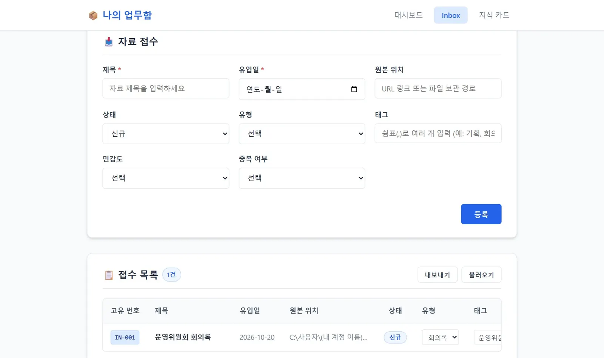
7차시를 마친 화면 — 시범 실행에서 실제로 만든 모습(가상 자료). 내 화면은 모양이 조금 달라도 됩니다.
준비물
6차시에 만든 Inbox 화면과 data\inbox.json
2차시 규칙표의 민감도 3단계(공개/내부/민감)
샘플 3건(가상): 회의록, 견적서, 교육 신청서
먼저 이해하기
도서관 책에는 분류 번호와 대출 가능 여부가 붙어 있습니다. 책 내용을 다 읽지 않아도 어느 서가에 꽂을지, 밖으로 빌려줘도 되는지 알 수 있습니다. 이렇게 자료 자체가 아니라 자료에 대한 정보를 메타데이터(자료를 설명하는 꼬리표)라고 합니다. 오늘 붙이는 꼬리표는 네 개입니다.
유형: 회의록·견적서·신청서·메일·사진처럼 자료의 종류. 하나만 고릅니다.
태그: 찾을 때 쓸 낱말. 쉼표로 여러 개.
민감도: 2차시 규칙표의 공개/내부/민감 그대로.
중복 여부: 같은 자료가 이미 들어와 있는지. 아니오/의심/중복.
꼬리표는 사람마다 기준이 다르면 소용이 없습니다. 그래서 먼저 기준표를 문서로 적고, 사람도 AI도 그 기준표만 봅니다. 기준표가 이 시스템의 SSOT(이것만 믿는 하나의 기준 자료)입니다. AI는 바쁜 신입 직원처럼 빠르게 제안하지만, 도장은 담당자가 찍습니다.
메타데이터 — 자료를 설명하는 정보. 유형, 태그, 민감도 같은 꼬리표.
드롭다운 — 눌러서 정해진 보기 가운데 하나를 고르는 칸.
분류 제안 — AI가 기준표를 보고 "이렇게 분류하면 어떨까요" 하고 내놓는 의견. 확정이 아닙니다.
따라 하기
가. 분류 기준표 만들기
실습지 위쪽 표에 유형 보기 5개와 민감도 판단 기준을 연필로 먼저 적습니다. 예) 사람 이름과 연락처가 들어 있으면 '민감'.
AGY에서 workbox 프로젝트를 열고 요청 1을 보냅니다.
권한 카드의 대상이 workbox\docs\분류기준.md 인지 읽고 허락합니다.
AGY 왼쪽 파일 목록에서 docs\분류기준.md 를 눌러 열고, 실습지에 적은 내용과 같은지 대조합니다.
✖ 내가 적지 않은 기준이 들어가 있으면: "○○ 줄은 빼 줘"라고 한 가지씩 요청합니다.
나. 화면에 꼬리표 칸 더하기
실습지 아래 표의 수용 기준을 확인한 뒤 요청 2를 보냅니다.
계획에서 고칠 파일이 inbox.html, app.js, style.css 인지 읽고 허락합니다.
크롬에서 inbox.html 을 열고 F5 를 누릅니다.
→ 이렇게 보이면 됩니다: 입력칸에 유형·민감도 드롭다운, 태그 입력칸, 중복 여부 표시가 더해져 있고, 6차시에 등록한 회의록이 그대로 있습니다.
✖ 회의록이 사라졌으면: '불러오기'로 data\inbox.json 을 고릅니다.
샘플 2건을 더 등록합니다. 거래처 「사무용품 견적서」(원본 위치 메일함 > 거래처), 오미선 씨의 「1인 창업 교육 신청서 묶음」(원본 위치 C:\사용자\(내 계정 이름)\샘플자료\1인 창업 교육 신청서 묶음). 꼬리표는 아직 비워 둡니다.
같은 견적서를 원본 위치 메신저 > 거래처 로 한 번 더 등록합니다.
→ 이렇게 보이면 됩니다: 중복 여부가 '의심'으로 표시됩니다.
다. AI 분류 제안 받고 내가 정하기
'내보내기'로 목록을 받고 workbox\data\inbox.json 에 덮어씁니다.
요청 3을 보냅니다. AGY가 파일을 고치지 않고 표로만 답하는지 봅니다.
제안을 읽고, 내 판단과 다른 칸은 실습지에 이유를 적습니다. 화면에서 각 항목의 꼬리표를 직접 고르고 저장합니다.
'내보내기'로 다시 저장합니다.
AI에게 건네는 말
어디에 입력하나요: '시작' 단추를 누르고 Antigravity 를 쳐서 AGY를 엽니다. 왼쪽에 workbox 프로젝트가 열려 있는지 먼저 봅니다. 화면 아래쪽 채팅 입력칸(에이전트에게 말을 거는 칸)을 누르고 아래 글을 붙여 넣은 뒤 Enter 로 보냅니다. AGY가 계획이나 권한 확인 카드를 먼저 보여 주면, 무엇을(동작) 어디에(대상) 하려는지 읽고 workbox 폴더 안의 일일 때만 허락합니다.
요청 1 ([ ] 자리는 실습지 내용으로 바꿉니다):
docs 폴더에 분류기준.md를 만들어 줘. 유형 보기는 [회의록, 견적서, 신청서, 메일, 사진 목록]이고, 민감도는 공개·내부·민감 세 단계로 [내가 적은 기준]을 적어 줘. 중복 판단은 "제목이 같거나 원본 위치가 같으면 의심"이야. 내가 적지 않은 기준은 더하지 마. 확인용 테스트 스크립트는 따로 만들거나 실행하지 마.
요청 2:
inbox.html의 항목에 유형(드롭다운), 태그(쉼표로 여러 개), 민감도(공개·내부·민감 드롭다운), 중복 여부 칸을 더해 줘. 보기는 docs/분류기준.md와 같게 해 줘. 등록할 때 분류기준.md의 중복 판단에 걸리면 중복 여부를 자동으로 '의심'으로 표시하고, 이미 등록한 항목의 네 칸도 목록에서 고쳐 저장할 수 있게 해 줘. 이미 저장된 항목과 내보내기·불러오기는 그대로 둬. 확인용 테스트 스크립트는 따로 만들거나 실행하지 마.
요청 3:
data/inbox.json의 항목들을 docs/분류기준.md 기준으로 분류해서 제안만 해 줘. 파일은 고치지 마. 항목마다 유형·태그·민감도·중복 여부와 그렇게 본 이유를 표로 보여 주고, 기준만으로 정하기 어려운 칸은 "사람 판단 필요"라고 적어 줘. 확인용 테스트 스크립트는 따로 만들거나 실행하지 마.
실제 고객 정보·주민번호·비밀번호·API 키는 AI에게도, 샘플 자료에도 넣지 않습니다.
실습지
자료
AI 제안(유형·민감도)
내 결정
다르게 정한 이유
운영위원회 회의록
사무용품 견적서
견적서(메신저로 다시 옴)
교육 신청서 묶음
오늘의 확인
[ ] docs\분류기준.md 를 열어 내가 정한 기준과 대조했다.
[ ] 같은 견적서를 두 번 등록했을 때 '의심' 표시를 보았다.
[ ] AI 제안과 내 결정이 다른 칸에 이유를 적었다.
[ ] 교육 신청서 묶음의 민감도를 직접 골랐다.
[ ] 마지막에 '내보내기'로 data\inbox.json 을 덮어썼다.
다음 차시 예고
꼬리표가 붙은 3건을 실제로 처리합니다. 신규→검토→보관/반려로 옮기고, 왜 그렇게 정했는지 근거와 처리자를 남깁니다.
2부 · Inbox를 만들다 · 8차시
8차시. 시스템 구축 ④: Inbox 처리 상태
📎 이 차시의 샘플 자료 받기
교실에서는 강사가 나눠 준 샘플자료 폴더를 씁니다. 집에서는 마이웨이 아카데미 C5 1강에 무료 회원으로 로그인하면 맨 위 「이 수업의 실습 자료」 상자에서 샘플자료.zip(회의록·견적서·신청서·사진 목록 등 12개)과 파일별로 내려받을 수 있습니다. 내 PC의 샘플자료 폴더에 풀어 두고 씁니다. 모두 학습용 가상 자료입니다.
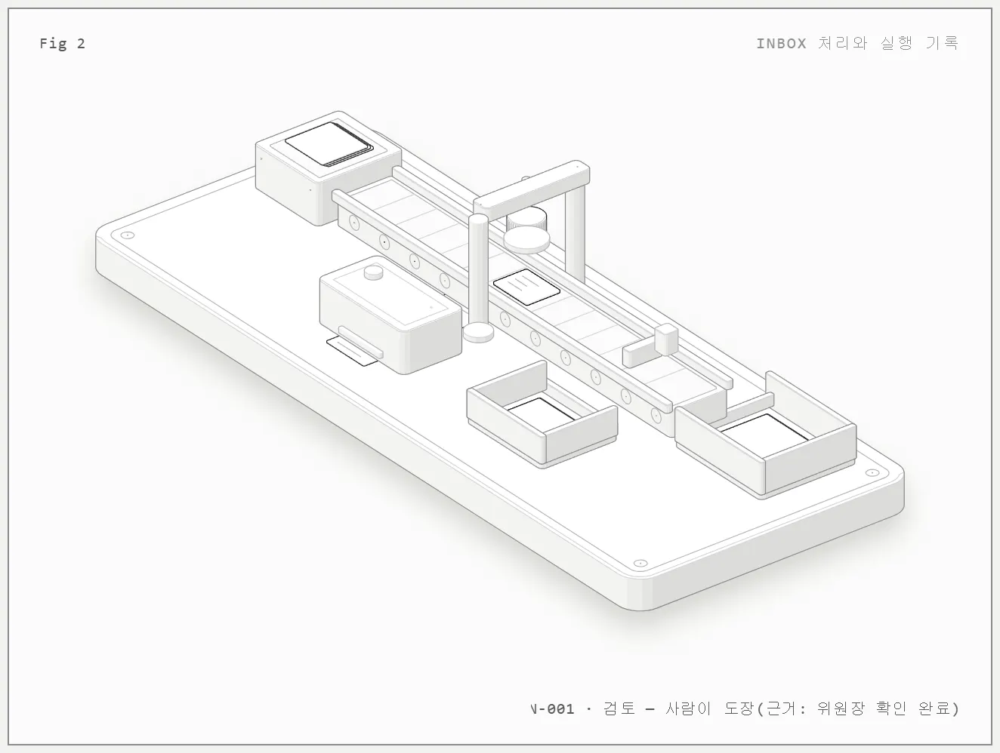
Fig 2 · Inbox 처리와 실행 기록 — 구조를 실물 기계로 본 그림. 마우스를 올리면 멈추고, 새 창으로 크게 보기.
오늘의 목표
Inbox 항목을 신규→검토→보관/반려 순서로 옮기는 처리 단추를 만들고, 처리할 때마다 처리 근거와 처리자를 남기게 합니다. 샘플 3건을 끝까지 처리합니다.
오늘 손에 남는 것
산출물 ④ 분류 흐름 — 샘플 3건이 정해진 순서로만 상태가 바뀌고, 항목마다 왜 보관 또는 반려했는지와 누가 정했는지가 기록된 Inbox입니다.
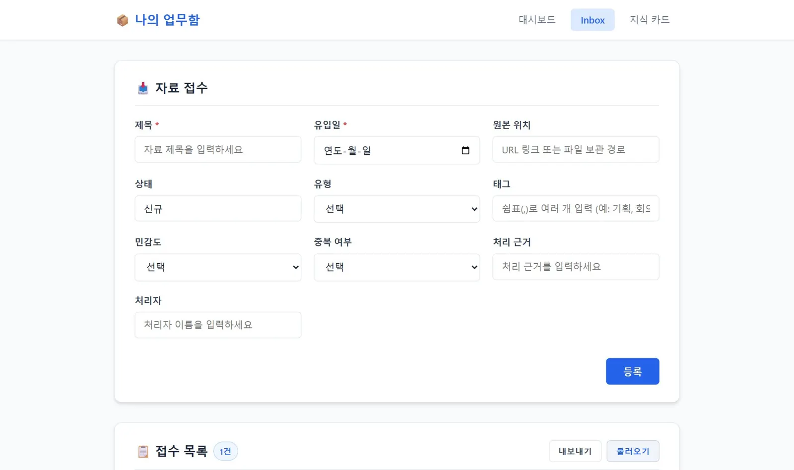
8차시를 마친 화면 — 시범 실행에서 실제로 만든 모습(가상 자료). 내 화면은 모양이 조금 달라도 됩니다.
준비물
7차시까지 만든 Inbox 화면과 data\inbox.json
docs\분류기준.md, 4차시 설계서의 수용 기준
검수표(아래 실습지), 샘플 자료 3건
먼저 이해하기
결재 문서는 기안→검토→결재 순서를 건너뛰지 못합니다. 그리고 반려할 때는 반려 사유를 적습니다. 나중에 누가 보더라도 왜 그렇게 됐는지 알 수 있어야 하기 때문입니다. 인수인계를 받아 본 분은 사유 없는 처리 기록이 얼마나 답답한지 아실 것입니다.
Inbox도 같습니다. 상태는 네 가지이고, 길은 정해져 있습니다.
신규: 막 들어온 자료. 아직 아무도 보지 않았습니다.
검토: 사람이 열어 보는 중입니다. 신규에서 바로 보관·반려로 갈 수 없고 반드시 여기를 거칩니다.
보관: 쓸 자료로 확정. 9차시에 지식 카드로 옮길 후보가 됩니다.
반려: 쓰지 않기로 한 자료. 중복본이나 잘못 들어온 자료입니다.
보관과 반려는 처리 근거(왜 그렇게 정했는지 한 문장)와 처리자(정한 사람 이름)가 없으면 저장되지 않게 합니다. 이렇게 처리 순서를 정해 두는 것을 상태 전이라고 합니다. AI가 분류를 제안할 수는 있어도, 보관과 반려를 정하는 단추는 사람이 누릅니다.
상태 전이 — 자료의 상태가 정해진 순서대로만 바뀌게 하는 규칙.
처리 근거 — 보관 또는 반려를 정한 이유. 예) "같은 견적서가 메일로 먼저 들어와 있음".
처리자 — 그 결정을 내린 사람. 오늘은 내 이름을 적습니다.
따라 하기
가. 수용 기준과 처리 단추
실습지 아래쪽에 오늘의 수용 기준을 적습니다. 예) "신규 항목에는 '보관'·'반려' 단추가 보이지 않는다." "근거를 비우고 '반려'를 누르면 저장되지 않고 이유가 보인다."
AGY에서 workbox 프로젝트를 열고 요청 1을 보냅니다.
계획에서 고칠 파일이 inbox.html, app.js, style.css 인지, 이미 저장된 항목을 지운다는 말이 없는지 읽고 허락합니다.
✖ 계획에 "기존 데이터를 초기화한다"가 있으면: 허락하지 않고 "저장된 항목은 그대로 두고 단추만 더해 줘"라고 보냅니다.
크롬에서 inbox.html 을 열고 F5 를 누릅니다.
→ 이렇게 보이면 됩니다: 신규 항목 옆에는 '검토 시작' 단추만, 검토 항목 옆에는 '보관'과 '반려' 단추가 보입니다.
✖ 항목이 사라졌으면: '불러오기'로 data\inbox.json 을 고릅니다.
나. 샘플 3건 처리하기
회의록의 '검토 시작'을 누릅니다. 상태가 '검토'로 바뀌는지 봅니다.
회의록의 '보관'을 누르고, 처리 근거 칸을 비운 채 저장해 봅니다.
→ 이렇게 보이면 됩니다: 저장되지 않고 "처리 근거를 적어 주세요" 같은 알림이 보입니다.
근거 "운영위원회 결정 사항 확인용 원본, 내부 보관"과 처리자(내 이름)를 적고 저장합니다.
메신저로 다시 온 견적서를 '검토 시작' → '반려'로 처리합니다. 근거는 "메일로 먼저 들어온 견적서와 같은 파일"입니다.
교육 신청서 묶음의 '검토 시작'을 누릅니다. 민감 자료이므로 원본 위치와 민감도가 맞는지 다시 확인한 뒤 '보관'합니다.
메일로 들어온 사무용품 견적서는 '신규'로 남겨, 처리 전 자료가 어떻게 보이는지 비교합니다.
실습지 검수표를 한 줄씩 채웁니다.
'내보내기'로 받은 파일을 workbox\data\inbox.json 에 덮어쓰고, 메모장으로 열어 처리 근거 글자가 들어 있는지 봅니다.
AI에게 건네는 말
어디에 입력하나요: '시작' 단추를 누르고 Antigravity 를 쳐서 AGY를 엽니다. 왼쪽에 workbox 프로젝트가 열려 있는지 먼저 봅니다. 화면 아래쪽 채팅 입력칸(에이전트에게 말을 거는 칸)을 누르고 아래 글을 붙여 넣은 뒤 Enter 로 보냅니다. AGY가 계획이나 권한 확인 카드를 먼저 보여 주면, 무엇을(동작) 어디에(대상) 하려는지 읽고 workbox 폴더 안의 일일 때만 허락합니다.
요청 1:
inbox.html의 항목에 처리 근거와 처리자 칸을 더하고, 상태를 단추로만 바꾸게 해 줘. 신규 항목에는 '검토 시작'만, 검토 항목에는 '보관'과 '반려'만 보여 줘. 신규에서 바로 보관·반려로 가거나 보관·반려를 다시 바꾸는 길은 막아 줘. 보관이나 반려를 누를 때 처리 근거와 처리자가 비어 있으면 저장하지 말고 무엇이 비었는지 알려 줘. 목록 위에 상태별 건수(신규·검토·보관·반려)를 보여 줘. 이미 저장된 항목과 내보내기·불러오기는 그대로 두고, 바꾼 뒤 내가 크롬에서 확인할 순서를 알려 줘. 확인용 테스트 스크립트는 따로 만들거나 실행하지 마.
막히면 한 번에 한 가지만 다시 요청합니다.
보관을 누를 때 처리 근거가 비어 있어도 저장돼. 이 검사만 고쳐 줘. 다른 곳은 바꾸지 마. 확인용 테스트 스크립트는 따로 만들거나 실행하지 마.
실제 고객 정보·주민번호·비밀번호·API 키는 AI에게도, 처리 근거 칸에도 넣지 않습니다.
실습지
자료
거친 상태
최종 상태
처리 근거
처리자
운영위원회 회의록
견적서(메신저)
교육 신청서 묶음
사무용품 견적서(메일)
수용 기준 1
수용 기준 2
오늘의 확인
[ ] 신규 항목에 '보관'·'반려' 단추가 보이지 않는 것을 확인했다.
[ ] 처리 근거를 비우고 저장해 막히는 것을 보았다.
[ ] 샘플 3건이 검토를 거쳐 보관 또는 반려되었다.
[ ] 상태별 건수가 실제 목록과 맞는다.
[ ] '내보내기'로 data\inbox.json 을 덮어쓰고 메모장으로 근거를 확인했다.
다음 차시 예고
'보관'된 자료를 지식 카드로 옮깁니다. 원본 출처와 버전이 보이는 Markdown 카드를 knowledge 폴더에 만듭니다.
3부 · 지식저장소와 대시보드 · 9차시
9차시. 시스템 구축 ⑤: 출처가 보이는 지식 카드
📎 이 차시의 샘플 자료 받기
교실에서는 강사가 나눠 준 샘플자료 폴더를 씁니다. 집에서는 마이웨이 아카데미 C5 1강에 무료 회원으로 로그인하면 맨 위 「이 수업의 실습 자료」 상자에서 샘플자료.zip(회의록·견적서·신청서·사진 목록 등 12개)과 파일별로 내려받을 수 있습니다. 내 PC의 샘플자료 폴더에 풀어 두고 씁니다. 모두 학습용 가상 자료입니다.
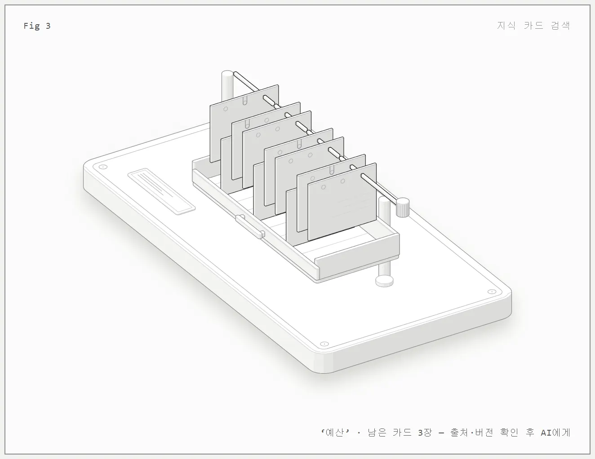
Fig 3 · 지식 카드 검색 — 구조를 실물 기계로 본 그림. 마우스를 올리면 멈추고, 새 창으로 크게 보기.
오늘의 목표
Inbox에서 '보관'으로 확정한 자료를 Markdown 지식 카드로 옮기고, 카드마다 원본 출처·버전·태그를 붙입니다. 카드 목록이 knowledge.html 화면에 보이게 합니다.
오늘 손에 남는 것
다음 차시의 "산출물 ⑤ 지식저장소"의 앞 절반입니다. 출처가 적힌 지식 카드 3장(knowledge/*.md), 카드 목록 파일 data/cards.js, 그리고 카드가 줄지어 보이는 knowledge.html 첫 화면입니다.
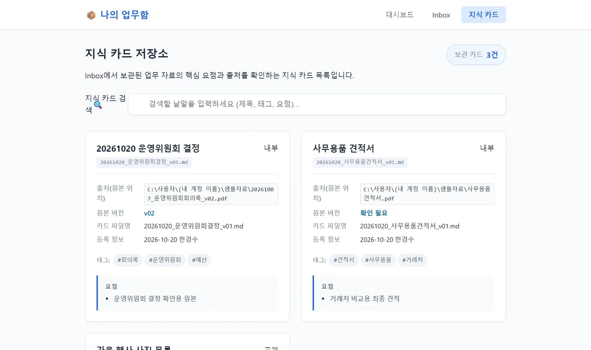
9차시를 마친 화면 — 시범 실행에서 실제로 만든 모습(가상 자료). 내 화면은 모양이 조금 달라도 됩니다.
준비물
실습용 PC, 크롬, AGY(workbox 프로젝트가 열린 상태)
8차시까지 만든 Inbox 화면과 샘플자료 폴더(가상 자료)
지식 카드 템플릿(아래 '따라 하기'에 있음), 메모장(Markdown 편집기 대신 씁니다)
먼저 이해하기
Inbox는 접수창구입니다. 들어온 자료가 무엇인지 보고 보관할지 반려할지 정하는 곳이지, 다시 꺼내 쓰는 곳은 아닙니다. 다시 꺼내 쓰려면 문서 대장이 필요합니다. 문서 대장 한 줄에는 문서 제목만 있지 않고 "원본은 어느 캐비닛에 있고, 몇 번째 개정판이며, 누가 언제 등록했는지"가 함께 적혀 있습니다. 오늘 만드는 지식 카드가 이 대장의 한 줄입니다.
카드에는 원본의 요점만 옮기고, 원본은 원래 자리에 그대로 둡니다. 카드가 원본을 대신하는 순간, 고쳐진 원본과 낡은 카드가 서로 다른 말을 하게 됩니다. 그래서 단일 기준 정보(SSOT)는 언제나 원본이고, 카드는 원본으로 가는 길 안내판입니다. 출처 칸이 비어 있는 카드는 만들지 않습니다.
Markdown(마크다운) — # 은 제목, - 는 목록처럼 기호 몇 개로 문서 모양을 적는 글쓰기 방식. 메모장으로 열어도 사람이 그대로 읽을 수 있습니다.
지식 카드 — 자료 한 건의 요점과 출처를 적은 Markdown 파일 한 장. knowledge/ 폴더에 한 파일씩 둡니다.
버전 — 같은 문서가 고쳐질 때마다 붙이는 번호. 파일명 끝의 v01, v02.
cards.js — 카드 파일들의 목록을 검색 화면이 읽기 좋게 한 파일로 모은 것. 사람이 고치지 않고 AGY에게 다시 만들게 합니다.
카드로 만드는 자료는 상태가 '보관'이고 민감도가 '공개' 또는 '내부'인 것만입니다. '민감' 자료는 카드로 옮기지 않고 Inbox에만 둡니다.
「가을 행사 사진 목록」(원본 위치 C:\사용자\(내 계정 이름)\샘플자료\가을 행사 사진 목록, 민감도 '공개')을 '등록'하고 같은 방법으로 보관합니다.
그다음 '내보내기'를 눌러 data/inbox.json 을 최신으로 저장합니다. AGY는 크롬 안의 저장소를 볼 수 없고 이 파일만 읽습니다.
Inbox 목록에서 상태가 '보관'인 항목 하나를 고릅니다. 예: 한경수 씨의 20261007_운영위원회회의록_v02.
'시작' 단추를 누르고 메모장 을 쳐서 메모장을 엽니다.
아래 템플릿을 적고, 괄호 자리를 Inbox 항목의 값으로 채웁니다.
```
(카드 제목: 무엇을 알려 주는 카드인지)
출처: (Inbox의 '원본 위치' 그대로)
원본 버전: v02
태그: 회의록, 운영위원회, 예산
민감도: 내부
등록: 2026-10-20 (내 이름)
요점
(원본에서 확인한 사실 2~3줄)
```
'파일' → '다른 이름으로 저장'을 누릅니다. workbox 안의 knowledge 폴더로 들어가 '파일 형식'을 '모든 파일'로 바꾸고, 파일 이름을 20261020_운영위원회결정_v01.md 로 적어 '저장'을 누릅니다.
→ 이렇게 보이면 됩니다: 파일 탐색기의 knowledge 폴더에 .md 파일이 하나 생깁니다.
✖ 이렇게 되면: 파일 이름 끝이 .md.txt 이면 '파일 형식'이 '텍스트 문서'로 남은 것입니다. 다시 저장하며 '모든 파일'을 고릅니다.
나. 나머지 2장과 목록 파일은 AGY에게
요청 전에 수용 기준을 실습지 아래 빈칸에 먼저 적습니다. 예: "카드 3장 모두 출처·원본 버전·태그 칸이 채워져 있다."
아래 'AI에게 건네는 말'의 요청문을 AGY에 보냅니다.
AGY가 계획과 권한 확인 카드를 보여 주면 동작과 대상을 읽습니다. workbox 안의 knowledge, data 폴더와 knowledge.html 에 쓰는 일일 때만 허락합니다. (화면의 글자는 버전에 따라 조금 다를 수 있습니다.)
메모장으로 새 카드 2장을 열어 출처 칸을 Inbox의 '원본 위치'와 한 글자씩 대조합니다.
다. 크롬에서 확인하기
파일 탐색기에서 knowledge.html 을 마우스 오른쪽 단추로 누르고 '연결 프로그램' → 'Google Chrome'을 고릅니다.
→ 이렇게 보이면 됩니다: 카드 3장이 제목·출처·버전·태그와 함께 보입니다.
✖ 이렇게 되면: 카드가 2장만 보이면 목록 파일이 낡은 것입니다. AGY에게 "카드 목록을 갱신해 줘"라고만 보내고, 크롬에서 F5 를 누릅니다.
잘 보이면 inbox.html 에서 한 번 더 '내보내기'를 눌러 둡니다.
AI에게 건네는 말
어디에 입력하나요: '시작' 단추를 누르고 Antigravity 를 쳐서 AGY를 엽니다. 왼쪽에 workbox 프로젝트가 열려 있는지 먼저 봅니다. 화면 아래쪽 채팅 입력칸(에이전트에게 말을 거는 칸)을 누르고 아래 글을 붙여 넣은 뒤 Enter 로 보냅니다. AGY가 계획이나 권한 확인 카드를 먼저 보여 주면, 무엇을(동작) 어디에(대상) 하려는지 읽고 workbox 폴더 안의 일일 때만 허락합니다.
data/inbox.json 에서 상태가 '보관'이고 민감도가 '공개' 또는 '내부'인 항목 중, 아직 카드가 없는 2건으로 지식 카드를 만들어 줘. 형식은 knowledge/20261020_운영위원회결정_v01.md 와 똑같이 하고, 출처는 Inbox의 '원본 위치'를 고치지 말고 그대로 옮겨 줘. 요점은 Inbox에 적힌 내용 안에서만 쓰고, 모르는 칸은 '확인 필요'로 비워 둬. 그다음 카드 목록을 갱신해서 data/cards.js 를 다시 만들고, knowledge.html 이 이 파일을 읽어 카드마다 제목·출처·원본 버전·태그를 보여 주게 해 줘. 다 되면 바꾼 파일 목록을 알려 줘. 확인용 테스트 스크립트는 따로 만들거나 실행하지 마.
실제 고객 정보·주민번호·비밀번호·API 키(프로그램끼리 쓰는 비밀 열쇠)는 카드에도, AI 요청에도 넣지 않습니다.
실습지
카드 파일명
카드 제목
출처(원본 위치)
원본 버전
태그
출처 대조 ☐
오늘의 수용 기준
오늘의 확인
[ ] knowledge 폴더에 .md 카드가 3장 있다.
[ ] 카드 3장 모두 출처·원본 버전·태그 칸이 채워져 있다.
[ ] AGY가 만든 카드 2장의 출처를 Inbox '원본 위치'와 직접 대조했다.
[ ] 크롬의 knowledge.html 에 카드 3장이 보인다.
[ ] 작업을 마치고 '내보내기'로 저장했다.
다음 차시 예고
카드가 늘어나면 눈으로 찾기 어렵습니다. 다음 차시에는 키워드로 카드를 찾고, 찾은 카드에서 원본까지 걸어가 확인하는 검색 화면을 완성합니다.
knowledge.html 에 키워드 검색을 붙이고, 검색 결과에서 원본 출처로 돌아가 내용을 직접 확인합니다. 그 과정에서 RAG의 기본 원리를 손으로 익힙니다.
오늘 손에 남는 것
산출물 ⑤ 지식저장소 — 출처가 적힌 카드 3건 이상이 키워드로 검색되고, 검색 결과마다 원본 위치를 따라가 확인한 기록이 남은 상태입니다.
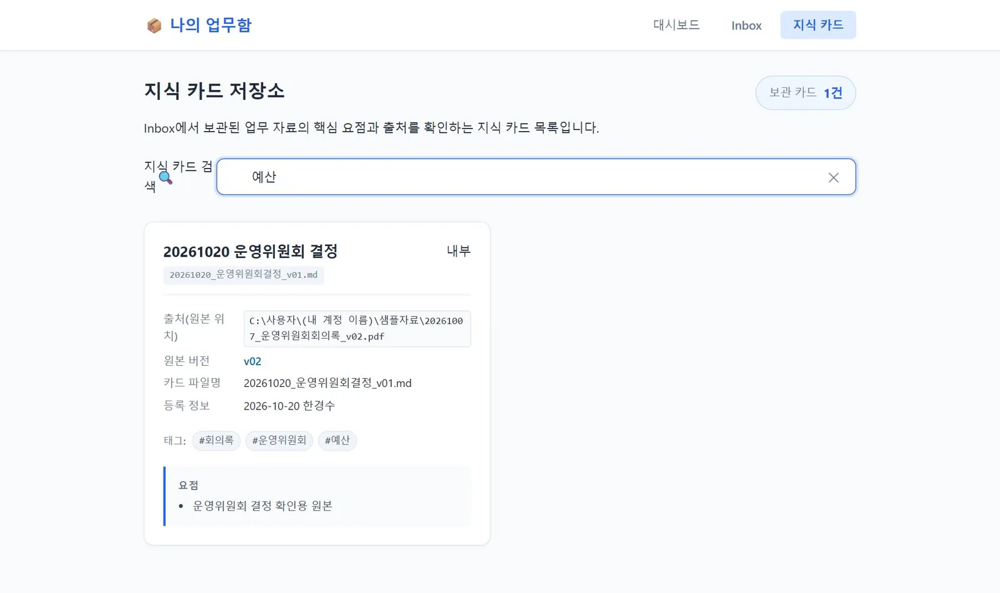
10차시를 마친 화면 — 시범 실행에서 실제로 만든 모습(가상 자료). 내 화면은 모양이 조금 달라도 됩니다.
준비물
실습용 PC, 크롬, AGY(workbox 프로젝트)
9차시에 만든 지식 카드 3건과 knowledge.html
카드의 원본 파일(Inbox '원본 위치'에 적힌 곳에 그대로 있어야 합니다)
먼저 이해하기
인수인계를 받을 때 가장 믿음이 가는 말은 "이건 3월 회의록 2쪽에 있습니다"입니다. 듣는 사람이 직접 펴 볼 수 있기 때문입니다. 반대로 "아마 그렇게 정했을 겁니다"는 아무리 그럴듯해도 다시 확인해야 합니다. AI의 답도 같습니다.
RAG(검색 증강 생성) — AI가 답하기 전에 내 자료에서 먼저 관련 부분을 찾고, 그 근거를 바탕으로 답하게 하는 방식. 영어 Retrieval-Augmented Generation의 머리글자입니다.
키워드 검색 — 낱말을 넣으면 그 낱말이 든 카드를 찾아 주는 기능.
근거 확인 — 검색 결과에 적힌 출처를 따라 원본을 열고, 카드의 요점이 원본에 정말 있는지 대조하는 일.
RAG는 세 단계입니다. ① 찾는다(내 카드에서 질문과 관련된 것을 고른다) ② 붙인다(고른 카드의 요점과 출처를 질문에 함께 붙인다) ③ 쓴다(AI가 붙은 근거로 답한다). 오늘은 ①을 화면이 하고, ②와 ③ 대신 사람이 원본을 열어 확인합니다. AI를 직접 연결하지 않습니다. 16차시에 이 묶음을 복사해 제미나이에 넘기는 방식으로 ③을 잇습니다.
출처가 중요한 이유는 하나입니다. 검색은 비슷한 카드를 찾아 줄 뿐, 그 카드가 맞다고 보증하지 않습니다. 카드가 낡았거나 옮겨 적다 틀렸을 수 있습니다. 그래서 중요한 사실은 언제나 원본에서 끝냅니다.
따라 하기
가. 검색칸 붙이기
수용 기준을 먼저 적습니다. 예: "'예산'을 넣으면 제목·태그·요점에 '예산'이 든 카드만 보이고, 결과마다 출처와 원본 버전이 보인다." "결과가 없으면 '찾는 카드가 없습니다'가 보인다."
아래 'AI에게 건네는 말'의 요청문을 AGY에 보냅니다.
계획과 권한 확인 카드를 읽고, knowledge.html 과 app.js, style.css 를 고치는 일일 때만 허락합니다. 카드 파일(knowledge/*.md)을 고치겠다고 하면 거절하고 이유를 묻습니다. (화면의 글자는 버전에 따라 조금 다를 수 있습니다.)
나. 크롬에서 검색해 보기
크롬에서 knowledge.html 을 열었다면 F5 를 눌러 새로 고칩니다.
검색칸에 예산 을 넣습니다.
→ 이렇게 보이면 됩니다: '예산'이 든 카드만 남고, 카드마다 출처와 원본 버전이 보입니다.
검색칸에 주차 처럼 카드에 없는 낱말을 넣습니다.
→ 이렇게 보이면 됩니다: '찾는 카드가 없습니다'가 보입니다.
✖ 이렇게 되면: 아무 변화가 없으면 한 가지만 고쳐 달라고 합니다. "검색칸에 글자를 넣어도 목록이 줄지 않아. 이것만 고쳐 줘."
다. 원본으로 돌아가 확인하기
실습지 첫 칸에 오늘 확인하고 싶은 질문을 적습니다. 예: "10월 행사 예산은 얼마로 정했나?"
질문에서 키워드 하나를 골라 검색합니다(예산).
나온 카드의 출처를 실습지에 옮겨 적습니다.
파일 탐색기를 열고 출처에 적힌 위치로 가서 원본 파일을 엽니다. 파일명 끝의 버전이 카드의 '원본 버전'과 같은지 봅니다.
원본에서 카드 요점에 해당하는 문장을 찾아, 같으면 '일치', 다르면 '불일치'에 표시합니다.
✖ 이렇게 되면: 원본 버전이 카드보다 새것(v03)이면 카드가 낡은 것입니다. 카드를 고치지 말고 실습지에 "카드 갱신 필요"라고 적어 둡니다. 원본이 그 자리에 없으면 Inbox의 '원본 위치'부터 바로잡습니다.
질문 3개로 7~11단계를 되풀이합니다.
다 되면 inbox.html 에서 '내보내기'를 눌러 저장합니다.
AI에게 건네는 말
어디에 입력하나요: '시작' 단추를 누르고 Antigravity 를 쳐서 AGY를 엽니다. 왼쪽에 workbox 프로젝트가 열려 있는지 먼저 봅니다. 화면 아래쪽 채팅 입력칸(에이전트에게 말을 거는 칸)을 누르고 아래 글을 붙여 넣은 뒤 Enter 로 보냅니다. AGY가 계획이나 권한 확인 카드를 먼저 보여 주면, 무엇을(동작) 어디에(대상) 하려는지 읽고 workbox 폴더 안의 일일 때만 허락합니다.
knowledge.html 맨 위에 검색칸을 하나 만들어 줘. 글자를 넣으면 data/cards.js 의 카드 중 제목·태그·요점에 그 낱말이 든 카드만 보여 줘. 결과마다 카드 제목, 출처(원본 위치), 원본 버전, 태그, 카드 파일명을 꼭 보여 주고, 결과가 없으면 '찾는 카드가 없습니다'라고 보여 줘. 카드 파일(knowledge/*.md)은 고치지 마. 다 되면 바꾼 파일과 확인 방법을 알려 줘. 확인용 테스트 스크립트는 따로 만들거나 실행하지 마.
실제 고객 정보·주민번호·비밀번호·API 키(프로그램끼리 쓰는 비밀 열쇠)는 카드에도, AI 요청에도 넣지 않습니다.
실습지
질문
검색 키워드
찾은 카드
출처(원본 위치)
원본 버전 일치 ☐
내용 일치 / 불일치
오늘의 수용 기준
오늘의 확인
[ ] 키워드를 넣으면 맞는 카드만 보이고, 결과마다 출처와 원본 버전이 보인다.
[ ] 없는 낱말을 넣으면 '찾는 카드가 없습니다'가 보인다.
[ ] 질문 3개에 대해 원본 파일을 직접 열어 카드 요점과 대조했다.
[ ] RAG의 세 단계(찾는다·붙인다·쓴다)를 내 말로 설명할 수 있다.
[ ] 작업을 마치고 '내보내기'로 저장했다.
다음 차시 예고
Inbox와 지식저장소가 각자 화면을 갖췄습니다. 다음 차시에는 이 둘과 앞으로 만들 업무·산출물을 첫 화면 한 장에 모으는 대시보드를 설계합니다.
3부 · 지식저장소와 대시보드 · 11차시
11차시. 구축 ⑦: 자동화 대시보드 설계
오늘의 목표
대기 중인 Inbox·업무 상태·산출물·지식 검색을 첫 화면 한 장에 배치하고, 영역마다 숫자를 어디서 가져올지(데이터 원천)를 정합니다. 설계대로 index.html 의 뼈대를 만듭니다.
오늘 손에 남는 것
다음 차시 "산출물 ⑥ 개인 대시보드"의 앞 절반입니다. 손으로 그린 화면 설계지 1장과, 영역 4개가 자리 잡은 index.html 뼈대(숫자는 아직 '예시')입니다.
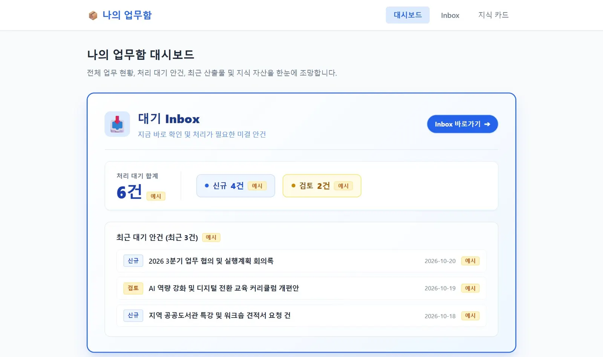
11차시를 마친 화면 — 시범 실행에서 실제로 만든 모습(가상 자료). 내 화면은 모양이 조금 달라도 됩니다.
준비물
화면 설계지(아래 실습지), 연필
실습용 PC, 크롬, AGY(workbox 프로젝트)
지금까지 만든 inbox.html, knowledge.html, 4차시 업무자동화 설계서(docs/)
먼저 이해하기
아침에 출근한 팀장이 가장 먼저 보는 것은 결재함의 숫자입니다. "결재 대기 3건"을 보고 하루의 순서를 정합니다. 대시보드는 그 결재함 겉면입니다. 일을 처리하는 곳이 아니라, 어디부터 손댈지 알려 주고 그 화면으로 데려다주는 곳입니다.
대시보드 — 여러 화면의 상태를 숫자와 짧은 목록으로 한곳에 모아 보여 주는 첫 화면. 자동차 계기판에서 온 말입니다.
데이터 원천 — 화면의 숫자를 가져오는 실제 자리. 예: Inbox 건수의 원천은 Inbox 화면이 쓰는 저장소.
설계의 핵심은 두 가지입니다. 첫째, 무엇을 가장 크게 둘지 정합니다. 사람이 판단해야 하는 일, 곧 '신규'와 '검토' 상태의 Inbox가 맨 위입니다. 둘째, 영역마다 데이터 원천을 하나씩만 둡니다. 대시보드가 숫자를 따로 적어 두면 Inbox와 어긋나는 날이 옵니다. 숫자는 늘 원천에서 세어 와야 하고, 대시보드는 아무것도 따로 저장하지 않습니다. 1차시의 단일 기준 정보(SSOT)를 화면에 적용한 것입니다.
이 과정의 대시보드 영역과 원천은 다음처럼 정합니다.
대기 Inbox: '신규'·'검토' 건수와 최근 3건 제목 ← inbox.html 이 쓰는 브라우저 저장소(localStorage)
업무 상태: 신규·검토·보관·반려 상태별 건수 ← 같은 저장소
최근 산출물: 최근 문서 3건 ← data/outputs.js (15차시부터 AGY가 outputs/ 폴더를 보고 갱신하는 목록, cards.js 와 같은 방식)
지식 검색: 검색칸과 카드 수 ← data/cards.js
따라 하기
가. 종이에 화면 그리기
실습지 아래 빈 곳에 가로로 긴 네모(PC 화면)를 그립니다.
맨 위에 '대기 Inbox' 칸을 가장 크게 그립니다.
그 아래에 '업무 상태', '최근 산출물', '지식 검색' 칸을 나란히 그립니다.
칸마다 누르면 어느 화면으로 가는지 화살표로 적습니다. 예: '대기 Inbox' → inbox.html.
실습지 표에 영역별 보여 줄 것·원천·누르면 가는 곳을 옮겨 적습니다.
수용 기준을 적습니다. 예: "첫 화면에 영역 4개가 보이고, 각 칸을 누르면 정한 화면으로 간다." "아직 연결 안 된 숫자 옆에는 '예시'가 붙어 있다."
나. AGY에게 뼈대 맡기기
아래 'AI에게 건네는 말'을 보냅니다. 오늘은 배치만 부탁하고, 실제 숫자 연결은 다음 차시에 한 번에 한 가지씩 합니다.
계획과 권한 확인 카드를 읽습니다. index.html 과 style.css 를 만들거나 고치는 일이면 허락합니다. inbox.html 이나 데이터 파일을 고치겠다고 하면 거절합니다. (화면의 글자는 버전에 따라 조금 다를 수 있습니다.)
다. 크롬에서 확인하기
파일 탐색기에서 index.html 을 마우스 오른쪽 단추로 누르고 '연결 프로그램' → 'Google Chrome'을 고릅니다.
→ 이렇게 보이면 됩니다: 맨 위에 '대기 Inbox'가 가장 크게, 그 아래 세 칸이 보이고 숫자 옆에 '예시'가 붙어 있습니다.
각 칸을 눌러 정한 화면으로 가는지 봅니다. 크롬 왼쪽 위 뒤로 가기 화살표로 돌아옵니다.
✖ 이렇게 되면: 칸이 세로로 한 줄로만 늘어서면, 크롬 창이 좁은지 먼저 봅니다. 창을 최대화해도 같으면 "네 칸을 PC 화면에서 한 줄에 셋씩 놓아 줘. 이것만 고쳐 줘."라고 보냅니다.
설계지와 다른 곳을 실습지 '고칠 점' 칸에 적습니다. 한 번에 하나씩 고쳐 달라고 합니다.
다 되면 inbox.html 에서 '내보내기'를 눌러 저장합니다.
AI에게 건네는 말
어디에 입력하나요: '시작' 단추를 누르고 Antigravity 를 쳐서 AGY를 엽니다. 왼쪽에 workbox 프로젝트가 열려 있는지 먼저 봅니다. 화면 아래쪽 채팅 입력칸(에이전트에게 말을 거는 칸)을 누르고 아래 글을 붙여 넣은 뒤 Enter 로 보냅니다. AGY가 계획이나 권한 확인 카드를 먼저 보여 주면, 무엇을(동작) 어디에(대상) 하려는지 읽고 workbox 폴더 안의 일일 때만 허락합니다.
index.html 을 '나의 업무함' 첫 화면(대시보드)으로 만들어 줘. 맨 위에 '대기 Inbox'(신규·검토 건수와 최근 3건 제목)를 가장 크게, 그 아래에 '업무 상태'(신규·검토·보관·반려 건수), '최근 산출물'(최근 3건), '지식 검색'(검색칸과 카드 수)을 놓아 줘. 숫자와 목록은 아직 연결하지 말고 예시 값을 넣되, 옆에 '예시'라고 표시해 줘. '대기 Inbox'와 '업무 상태'는 누르면 inbox.html, '지식 검색'은 knowledge.html 로 가게 해 줘. inbox.html 과 data/ 폴더는 건드리지 마. 다 되면 바꾼 파일을 알려 줘. 확인용 테스트 스크립트는 따로 만들거나 실행하지 마.
실제 고객 정보·주민번호·비밀번호·API 키(프로그램끼리 쓰는 비밀 열쇠)는 화면에도, AI 요청에도 넣지 않습니다.
실습지
영역
보여 줄 것
데이터 원천
누르면 가는 곳
크기 순위
고칠 점
대기 Inbox
업무 상태
최근 산출물
지식 검색
오늘의 수용 기준
오늘의 확인
[ ] 화면 설계지에 영역 4개와 화살표를 그렸다.
[ ] 영역마다 데이터 원천을 하나씩 적었다.
[ ] 크롬의 index.html 에 영역 4개가 보이고 숫자 옆에 '예시'가 붙어 있다.
[ ] 각 칸을 눌러 정한 화면으로 이동하는 것을 확인했다.
다음 차시 예고
다음 차시에는 '예시' 숫자를 하나씩 실제 Inbox와 지식 카드 숫자로 바꾸고, Inbox 화면과 직접 세어 본 숫자가 같은지 확인해 개인 대시보드를 완성합니다.
3부 · 지식저장소와 대시보드 · 12차시
12차시. 구축 ⑧: 대시보드 데이터 연결
📎 이 차시의 샘플 자료 받기
교실에서는 강사가 나눠 준 샘플자료 폴더를 씁니다. 집에서는 마이웨이 아카데미 C5 1강에 무료 회원으로 로그인하면 맨 위 「이 수업의 실습 자료」 상자에서 샘플자료.zip(회의록·견적서·신청서·사진 목록 등 12개)과 파일별로 내려받을 수 있습니다. 내 PC의 샘플자료 폴더에 풀어 두고 씁니다. 모두 학습용 가상 자료입니다.
오늘의 목표
대시보드의 '예시' 숫자를 실제 Inbox 건수와 업무 상태, 지식 카드 수로 바꾸고, 각 칸에서 해당 화면으로 이동하게 합니다. 화면의 숫자가 직접 센 숫자와 같은지 확인해 개인 대시보드를 완성합니다.
오늘 손에 남는 것
산출물 ⑥ 개인 대시보드 — index.html 을 열면 대기 Inbox·업무 상태·지식 검색이 실제 데이터로 표시되고, 각 칸에서 Inbox와 검색 화면으로 이동하는 첫 화면입니다.
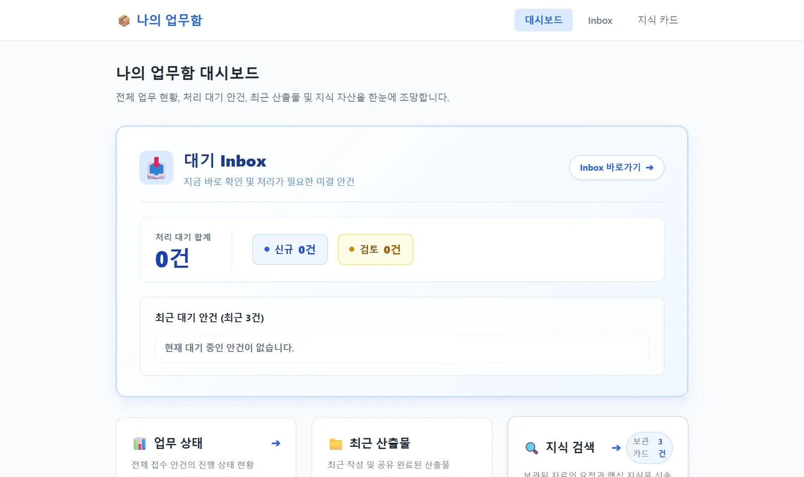
12차시를 마친 화면 — 시범 실행에서 실제로 만든 모습(가상 자료). 내 화면은 모양이 조금 달라도 됩니다.
준비물
실습용 PC, 크롬, AGY(workbox 프로젝트)
11차시 화면 설계지와 index.html 뼈대
샘플 데이터: Inbox 항목 5건 이상(상태가 고루 섞이게), 지식 카드 3건
먼저 이해하기
월말 보고서의 숫자는 담당자가 원장에서 세어 옵니다. 보고서에 숫자를 손으로 고쳐 쓰는 순간 원장과 보고서가 갈라집니다. 대시보드도 같습니다. 오늘 하는 일은 '예시' 숫자를 지우고, 화면을 열 때마다 원천에서 다시 세어 오게 만드는 일입니다.
데이터 연결 — 화면의 숫자나 목록을 데이터 원천에서 읽어 와 채우게 하는 일.
localStorage(로컬 스토리지) — 크롬 안에 남는 작은 저장 공간. Inbox 화면이 입력값을 두는 곳이고, 대시보드도 같은 곳을 읽습니다.
빈 상태 — 보여 줄 자료가 아직 없을 때의 화면. 빈칸 대신 "아직 산출물이 없습니다"처럼 이유를 적습니다.
연결은 한 번에 한 영역씩 합니다. 네 칸을 한꺼번에 부탁하면 어느 숫자가 틀렸는지 찾기 어렵습니다. 한 칸을 연결하고, 직접 센 숫자와 대조하고, 맞으면 다음 칸으로 갑니다. 결재 서류를 한 장씩 대조하며 넘기는 것과 같은 순서입니다.
'최근 산출물'은 15~16차시에 문서가 생겨야 채워집니다. 오늘은 빈 상태 문구만 연결해 두고, 15차시 이후에는 이 칸이 data/outputs.js(산출물 목록)를 읽습니다.
따라 하기
가. 기준 숫자를 직접 세기
크롬에서 inbox.html 을 열고, 상태별 항목 수를 눈으로 셉니다.
실습지 '직접 센 값' 칸에 신규·검토·보관·반려 건수를 적습니다. 지식 카드 수는 파일 탐색기의 knowledge 폴더에서 .md 파일을 셉니다.
수용 기준을 적습니다. 예: "대시보드의 모든 숫자가 직접 센 값과 같다." "Inbox에 1건을 더하고 F5 를 누르면 '대기 Inbox'가 1 늘어난다."
나. 한 칸씩 연결하기
'AI에게 건네는 말'의 첫 요청문(대기 Inbox)을 보냅니다.
계획과 권한 확인 카드를 읽고, index.html 과 app.js 를 고치는 일일 때만 허락합니다. Inbox 데이터를 지우거나 바꾸겠다고 하면 거절합니다. (화면의 글자는 버전에 따라 조금 다를 수 있습니다.)
크롬에서 index.html 을 열고 F5 를 누릅니다.
→ 이렇게 보이면 됩니다: '대기 Inbox' 숫자가 직접 센 신규+검토 건수와 같고, '예시' 표시가 사라졌습니다.
✖ 이렇게 되면: 숫자가 0이면 대시보드가 Inbox와 다른 저장 공간을 읽는 것입니다. "inbox.html 이 저장할 때 쓰는 이름을 그대로 읽어 줘. 이것만 고쳐 줘."라고 보냅니다.
실습지 '대시보드 값'에 적고 '일치'를 표시합니다.
두 번째(업무 상태), 세 번째(지식 검색), 네 번째(최근 산출물) 요청문으로 4~7단계를 되풀이합니다.
다. 움직이는지 확인하기
inbox.html 에서 가상 자료 1건(예: 한경수 씨가 받은 「거래처 납품 일정 안내 메일」, 원본 위치 메일함 > 납품 안내)을 새로 '등록'합니다.
index.html 로 돌아와 F5 를 누릅니다.
→ 이렇게 보이면 됩니다: '대기 Inbox'와 '신규'가 1씩 늘었습니다.
대시보드의 검색칸에 예산 을 넣고 Enter 를 누릅니다.
→ 이렇게 보이면 됩니다: knowledge.html 이 열리고 '예산' 검색 결과가 보입니다.
모두 맞으면 inbox.html 에서 '내보내기'를 눌러 저장합니다.
AI에게 건네는 말
어디에 입력하나요: '시작' 단추를 누르고 Antigravity 를 쳐서 AGY를 엽니다. 왼쪽에 workbox 프로젝트가 열려 있는지 먼저 봅니다. 화면 아래쪽 채팅 입력칸(에이전트에게 말을 거는 칸)을 누르고 아래 글을 붙여 넣은 뒤 Enter 로 보냅니다. AGY가 계획이나 권한 확인 카드를 먼저 보여 주면, 무엇을(동작) 어디에(대상) 하려는지 읽고 workbox 폴더 안의 일일 때만 허락합니다.
첫 요청(대기 Inbox):
index.html 의 '대기 Inbox' 칸만 실제 데이터로 연결해 줘. inbox.html 이 쓰는 브라우저 저장소를 그대로 읽어서, 상태가 '신규'·'검토'인 항목 수와 가장 최근 3건의 제목을 보여 주고 '예시' 표시는 지워 줘. 대시보드는 읽기만 하고 Inbox 데이터를 저장하거나 바꾸지 마. 다른 칸은 그대로 둬. 다 되면 바꾼 파일과 확인 방법을 알려 줘. 확인용 테스트 스크립트는 따로 만들거나 실행하지 마.
이어서 한 번에 하나씩 보낼 요청:
이번에는 '업무 상태' 칸만 연결해 줘. 같은 저장소에서 신규·검토·보관·반려 건수를 세어 보여 줘. 확인용 테스트 스크립트는 따로 만들거나 실행하지 마.
이번에는 '지식 검색' 칸만 연결해 줘. data/cards.js 의 카드 수를 보여 주고, 검색칸에 낱말을 넣고 Enter 를 누르면 knowledge.html 이 그 낱말로 검색된 상태로 열리게 해 줘. 확인용 테스트 스크립트는 따로 만들거나 실행하지 마.
이번에는 '최근 산출물' 칸만 정리해 줘. 아직 문서가 없으니 '아직 산출물이 없습니다'라고 보여 주고 '예시' 표시는 지워 줘. 확인용 테스트 스크립트는 따로 만들거나 실행하지 마.
실제 고객 정보·주민번호·비밀번호·API 키(프로그램끼리 쓰는 비밀 열쇠)는 화면에도, AI 요청에도 넣지 않습니다.
실습지
확인 항목
직접 센 값
대시보드 값
일치 ☐
누르면 가는 곳 확인 ☐
대기 Inbox (신규+검토)
업무 상태: 신규 / 검토
업무 상태: 보관 / 반려
지식 카드 수
1건 추가 후 대기 Inbox
최근 산출물 (빈 상태 문구)
오늘의 수용 기준
오늘의 확인
[ ] 대시보드의 모든 숫자가 직접 센 값과 같고, '예시' 표시가 남아 있지 않다.
[ ] Inbox에 1건을 더한 뒤 F5 를 누르면 '대기 Inbox'가 1 늘어난다.
[ ] '대기 Inbox'·'업무 상태'를 누르면 inbox.html, 검색칸에서 Enter 를 누르면 knowledge.html 로 간다.
[ ] 연결은 한 번에 한 칸씩 부탁하고, 칸마다 크롬에서 확인했다.
[ ] 작업을 마치고 '내보내기'로 저장했다.
다음 차시 예고
이제 첫 화면에서 할 일이 보입니다. 4부에서는 4차시 설계서의 트리거·조건·액션을 앱에 옮겨, 정해진 경우에 앱이 스스로 상태를 바꾸고 사람의 승인을 기다리게 만듭니다.
4차시 업무자동화 설계서에 적은 트리거·조건·액션을 「나의 업무함」에 실제로 도는 규칙으로 넣습니다. 잘못된 입력은 저장하지 않고 이유를 보여 주며, 고친 뒤 '다시 시도'로 이어 가게 합니다.
오늘 손에 남는 것
다음 차시 "산출물 ⑦ 실행 가능한 업무 프로세스"의 앞 절반입니다. Inbox에 새 항목이 저장될 때 규칙 3개가 스스로 돌고, 잘못된 입력은 문 앞에서 막히는 상태를 만듭니다. 다음 차시에 여기에 사람의 승인과 실행 로그를 붙입니다.
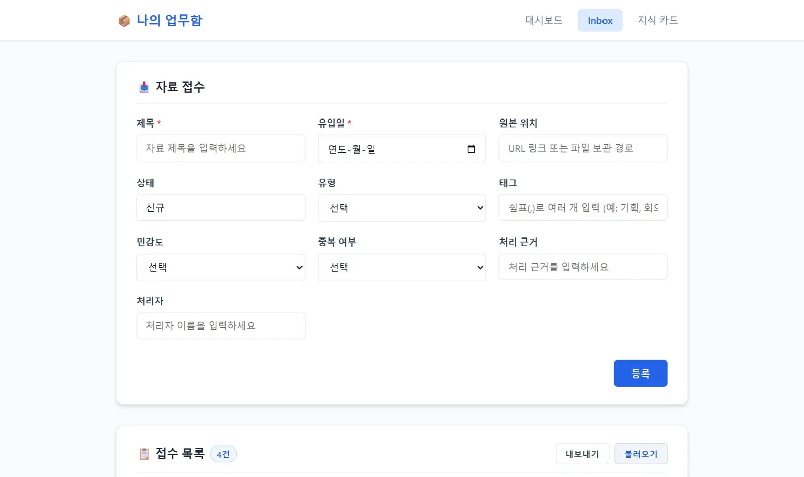
13차시를 마친 화면 — 시범 실행에서 실제로 만든 모습(가상 자료). 내 화면은 모양이 조금 달라도 됩니다.
준비물
산출물 ② 업무자동화 설계서(workbox\docs 또는 종이본)
AGY, 크롬, workbox 폴더
테스트 자료 5건(아래 '다.'에 적힌 가상 자료)
먼저 이해하기
회사에는 사람이 매번 판단하지 않아도 돌아가는 규정이 있습니다. "지출 결의서가 올라오면, 금액이 100만 원을 넘을 때, 부서장 결재로 돌린다." 자동화 실행 규칙은 이 사내 규정을 프로그램이 읽을 수 있게 옮긴 것입니다. 조항 번호처럼 규칙마다 R1·R2·R3 이름을 붙여야 "이 항목은 왜 검토로 갔지?"를 따라갈 수 있습니다.
오늘 넣을 규칙은 세 가지입니다.
R1. 새 항목이 저장될 때, 민감도가 '민감'이면, 상태를 '검토'로 두고 승인 대기 목록에 올린다(승인 대기 영역은 14차시에 inbox.html 안에 만듭니다).
R2. 새 항목이 저장될 때, 제목과 원본 위치가 같은 항목이 이미 있으면, 중복 여부를 '중복'으로 하고 상태를 '검토'로 둔다.
R3. 대시보드를 열 때, '신규'로 7일 넘게 남은 항목이 있으면, 그 건수를 '오래된 신규'로 따로 보여 준다.
규칙보다 먼저 서는 것이 입력값 검증입니다. 창구 직원이 빈칸 있는 신청서를 그 자리에서 돌려주는 것과 같습니다. 6차시(제목·유입일 빈칸)와 8차시(처리 근거·처리자 빈칸)에 이미 만든 검증은 그대로 두고, 오늘은 검사 항목을 넓힙니다.
실패에는 두 종류가 있습니다. 입력이 틀린 실패는 고친 뒤에만 다시 시도합니다. 저장 공간 문제처럼 그때만 생긴 실패는 한 번 더 해 보고, 그래도 안 되면 멈추고 크게 알립니다. 조용히 실패하는 자동화가 가장 위험하므로 '저장되었습니다'는 실제 저장이 끝난 뒤에만 띄웁니다.
트리거 — 규칙이 깨어나는 순간. 예) 새 항목이 저장될 때, 대시보드를 열 때
조건 — 규칙이 일을 할지 말지 가르는 물음. 예) 민감도가 '민감'인가?
액션 — 조건이 맞을 때 실제로 하는 일. 예) 상태를 '검토'로 바꾼다
입력값 검증 — 저장하기 전에 빈칸·잘못된 날짜 같은 입력 실수를 걸러 내는 문지기
따라 하기
가. 규칙을 종이에 먼저 적기
설계서에서 트리거·조건·액션 문장을 찾아 실습지에 옮깁니다. 설계서에 없으면 위의 R1~R3을 그대로 씁니다.
실습지 아래쪽에 입력값 검증 두 줄을 더합니다. "원본 위치가 비면 저장하지 않는다." "유입일이 오늘보다 뒤면 저장하지 않는다."
수용 기준을 적습니다. 예) "원본 위치를 비우고 '등록'을 누르면 목록에 줄이 늘지 않고, 입력칸 옆에 이유가 빨간 글씨로 보인다."
나. AGY에게 규칙과 검증을 넣게 하기
AGY에서 workbox 프로젝트를 열고 아래 요청 1을 보냅니다.
계획 카드에서 고칠 파일이 app.js, inbox.html, index.html 처럼 workbox 안의 파일인지 읽고 허락합니다.
✖ workbox 밖의 경로나 새 프로그램 설치가 보이면: 거절하고 "workbox 폴더 안의 파일만 고쳐 줘"라고 다시 보냅니다.
AGY가 끝났다고 하면 app.js 맨 위에 R1~R3이 한글 설명과 함께 모여 있는지 봅니다.
다. 테스트 자료 5건으로 확인하기
크롬에서 inbox.html 을 열고 F5 를 누릅니다. 아래 다섯 건을 차례로 '등록'해 봅니다(한경수 씨의 가상 자료).
① 「11월 운영위원회 회의록」, 민감도 '내부' → 상태 '신규', 처리 근거 빈칸
② 「조합원 연락처 명단」, 민감도 '민감' → 상태 '검토', 처리 근거 'R1', 처리자 '자동'
③ ①과 제목·원본 위치가 같은 자료 → 중복 여부 '중복', 처리 근거 'R2', 처리자 '자동'
④ 원본 위치를 비운 자료 → 저장 안 됨
⑤ 유입일을 2030-01-01 로 넣은 자료 → 저장 안 됨
④와 ⑤에서 이유를 읽고, 칸을 고친 뒤 '다시 시도'를 누릅니다.
→ 이렇게 보이면 됩니다: 앞서 적은 내용이 지워지지 않고 남아 있고, 고친 뒤에는 목록에 한 줄이 생깁니다.
✖ 빈칸인데도 저장되면: AGY에게 아래 요청 2처럼 그 한 가지만 고쳐 달라고 합니다.
index.html 을 열어 '오래된 신규' 칸이 보이는지 확인합니다. 테스트 자료는 오늘 날짜라 0건이 맞습니다.
다 맞으면 '내보내기'로 data\inbox.json 을 저장합니다.
AI에게 건네는 말
어디에 입력하나요: '시작' 단추를 누르고 Antigravity 를 쳐서 AGY를 엽니다. 왼쪽에 workbox 프로젝트가 열려 있는지 먼저 봅니다. 화면 아래쪽 채팅 입력칸(에이전트에게 말을 거는 칸)을 누르고 아래 글을 붙여 넣은 뒤 Enter 로 보냅니다. AGY가 계획이나 권한 확인 카드를 먼저 보여 주면, 무엇을(동작) 어디에(대상) 하려는지 읽고 workbox 폴더 안의 일일 때만 허락합니다.
요청 1:
Inbox에 자동화 규칙 세 개를 넣어 줘. R1: 새 항목 저장 때 민감도가 '민감'이면 상태를 '검토'로 해(승인 대기 영역은 다음 차시에 만들 거야). R2: 새 항목 저장 때 제목과 원본 위치가 같은 항목이 이미 있으면 중복 여부를 '중복', 상태를 '검토'로 해. R3: index.html을 열 때 '신규'로 7일 넘은 항목 수를 '오래된 신규'로 보여 줘. 규칙은 app.js 맨 위 한곳에 한글 설명과 함께 모아서, 나중에 내가 읽고 고칠 수 있게 해 줘. 규칙이 바꾼 항목은 처리 근거 칸에 'R1 민감 자료'처럼 규칙 이름과 이유를, 처리자 칸에 '자동'을 적어 줘. 6차시·8차시에 만든 저장 전 검사는 그대로 두고, 원본 위치·민감도가 비었거나 유입일이 오늘보다 뒤인 경우를 더해서 저장하지 말고, 그 칸 옆에 이유를 빨간 글씨로 보여 주고 '다시 시도' 단추를 띄워 줘. 입력한 내용은 지우지 마. 저장 자체가 실패하면 한 번만 다시 해 보고, 그래도 안 되면 "저장하지 못했습니다. 내보내기로 백업하세요"라고 알려 줘. '저장되었습니다'는 실제로 저장된 뒤에만 띄워 줘. 다 되면 내가 크롬에서 확인할 순서를 알려 줘. 확인용 테스트 스크립트는 따로 만들거나 실행하지 마.
요청 2(고칠 때 — 한 번에 한 가지만):
원본 위치를 비워도 저장이 돼. 저장 전 검사에서 원본 위치 빈칸을 막는 부분만 고쳐 줘. 다른 기능은 바꾸지 마. 확인용 테스트 스크립트는 따로 만들거나 실행하지 마.
AGY에게 보내는 글과 테스트 자료에는 실제 고객 정보·주민번호·비밀번호·API 키를 넣지 않습니다. (AGY 화면의 글자는 버전에 따라 조금 다를 수 있습니다.)
실습지
이름
트리거(언제)
조건(어떤 경우)
액션(무엇을)
크롬 확인(☐ 됨 / ✖ 안 됨)
R1
R2
R3
검증 1
검증 2
오늘의 확인
[ ] 요청 전에 규칙 3개와 수용 기준을 실습지에 적었다.
[ ] 민감 자료를 저장하자 상태가 '검토'로, 처리 근거가 R1로 보였다.
[ ] 같은 자료를 두 번 등록하자 중복 여부가 '중복'으로 바뀌었다.
[ ] 빈칸이나 미래 날짜는 저장되지 않고 이유가 보였으며, 고친 뒤 '다시 시도'로 저장했다.
[ ] '내보내기'로 data\inbox.json 을 새로 저장했다.
다음 차시 예고
'검토'로 올라간 항목을 사람이 승인하거나 반려하고, 그 결정을 누가·언제·왜 내렸는지 data/log.json 에 남깁니다.
4부 · 자동화 실행과 AI 초안 · 14차시
14차시. 시스템 구축 ⑩: 사람 승인과 실행 로그
📎 이 차시의 샘플 자료 받기
교실에서는 강사가 나눠 준 샘플자료 폴더를 씁니다. 집에서는 마이웨이 아카데미 C5 1강에 무료 회원으로 로그인하면 맨 위 「이 수업의 실습 자료」 상자에서 샘플자료.zip(회의록·견적서·신청서·사진 목록 등 12개)과 파일별로 내려받을 수 있습니다. 내 PC의 샘플자료 폴더에 풀어 두고 씁니다. 모두 학습용 가상 자료입니다.
규칙이 '검토'로 올린 항목을 사람이 승인하거나 반려하고, 그 결정이 시각·항목·결정·이유·처리자와 함께 data/log.json 에 남게 합니다. 샘플 업무 1건을 처음부터 끝까지 흘려 봅니다.
오늘 손에 남는 것
산출물 ⑦ 실행 가능한 업무 프로세스 — 샘플 업무 1건이 Inbox 저장 → 자동 규칙 → 사람 승인 → 보관까지 흐르고, 그 과정이 실행 로그 두 줄 이상으로 남은 상태입니다.
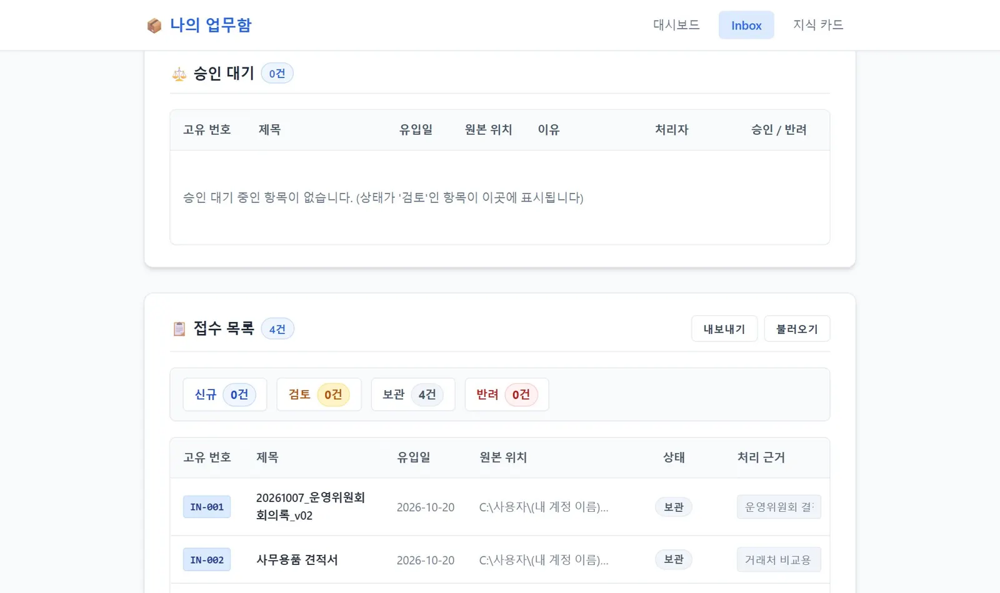
14차시를 마친 화면 — 시범 실행에서 실제로 만든 모습(가상 자료). 내 화면은 모양이 조금 달라도 됩니다.
준비물
13차시에 규칙을 넣은 workbox 와 AGY
크롬
실행 로그 양식(아래 실습지)
샘플 업무 1건: 한경수 씨의 「11월 정기총회 참석자 명단」(가상, 민감도 '민감')
먼저 이해하기
결재와 문서 대장을 다뤄 본 분이라면 오늘 내용은 이미 아는 것입니다. 기안은 누구나 올릴 수 있지만, 도장은 정해진 사람이 찍습니다. 그리고 누가 언제 찍었는지 대장에 남습니다. 자동화도 같습니다. 규칙은 "이건 사람이 봐야 합니다"까지만 하고, 마지막 판단은 사람이 합니다. 이렇게 흐름 한가운데 사람의 판단 자리를 두는 것을 Human-in-the-loop라고 부릅니다.
결재판을 만들 때 지킬 원칙은 세 가지입니다.
대상은 순번이 아니라 고유 번호로 가리킨다. 은행 번호표는 "대기 세 번째"가 아니라 "137번"이라고 적혀 있습니다. 목록 순서로 고르면, 한 건이 처리되어 빠질 때 뒤의 번호가 당겨져 엉뚱한 건이 승인될 수 있습니다. 실제로 자주 일어나는 사고입니다.
기록은 덧붙이기만 한다. 로그에는 고치기·지우기 단추를 두지 않습니다. 잘못 내린 결정은 지우지 않고, 바로잡는 결정을 새 줄로 남깁니다.
'처리 완료'는 처리가 끝난 뒤에 표시한다. 상태가 실제로 저장된 다음에 로그를 쓰고 완료를 띄웁니다. 승인이 실패했는데 성공으로 보이는 결재판은 아무도 모르게 일을 멈춰 세웁니다.
반려에는 반드시 이유를 적습니다. 이유 없는 반려는 판단이 아니라 방치입니다.
Human-in-the-loop — 자동화 흐름 중간에 사람이 확인하고 결정하는 자리를 두는 방식
실행 로그 — 언제·무엇에·어떤 결정을·왜·누가 했는지 한 줄씩 쌓는 기록. 오늘은 data/log.json
고유 번호(ID) — 항목마다 하나씩 붙어 끝까지 바뀌지 않는 이름표. 6차시부터 IN-001 처럼 붙어 있습니다
따라 하기
가. 로그 양식과 수용 기준 정하기
실습지의 칸 이름(시각·항목 번호·항목 제목·결정·이유·처리자)을 확인합니다. 이 순서가 log.json 한 줄의 모양이 됩니다.
수용 기준을 적습니다. 예) "이유를 비우고 '반려'를 누르면 처리되지 않는다." "승인하면 로그 맨 위에 새 줄이 생기고, 줄을 지우는 단추는 없다."
나. 승인 화면과 로그 만들기
AGY에서 아래 요청 1을 보냅니다. 계획 카드에서 고칠 파일이 inbox.html, app.js 등 workbox 안인지 읽고 허락합니다.
크롬에서 inbox.html 을 열고 F5 를 누릅니다.
→ 이렇게 보이면 됩니다: '승인 대기' 영역에 13차시에 '검토'가 된 항목이 고유 번호와 함께 보이고, 줄마다 '승인'·'반려' 단추와 이유 칸이 있습니다. 화면 아래쪽에 '실행 기록' 표가 있습니다.
다. 샘플 업무 1건을 끝까지 흘리기
「11월 정기총회 참석자 명단」을 민감도 '민감'으로 '등록'합니다.
→ 이렇게 보이면 됩니다: 승인 대기에 올라가고, 실행 기록에 처리자 '자동', 결정 'R1 검토 전환' 한 줄이 생깁니다.
이유 칸에 "개인 연락처 포함, 사무국 내부 보관"이라고 쓰고, 처리자에 내 이름을 넣은 뒤 '승인'을 누릅니다.
→ 이렇게 보이면 됩니다: 상태가 '보관'으로 바뀌고, 실행 기록에 내 이름으로 '승인' 한 줄이 더해집니다.
다른 검토 항목 하나에서 이유를 비운 채 '반려'를 누릅니다.
→ 이렇게 보이면 됩니다: 처리되지 않고 "반려 이유를 적어 주세요"가 보입니다.
✖ 이유 없이 반려되면: AGY에게 아래 요청 2처럼 그 한 가지만 고쳐 달라고 합니다.
'로그 내보내기'를 누르고, 다운로드된 log.json 을 workbox\data 로 옮깁니다(6차시와 같은 방법).
data\log.json 을 메모장으로 열어, 방금 한 결정이 시각·항목 번호와 함께 적혀 있는지 읽습니다.
요청 3을 보내 대시보드 '업무 상태' 칸에 '승인 대기 n건'을 덧붙입니다. index.html 을 F5 로 열어 '승인 대기' 영역의 줄 수와 같은지 봅니다.
AI에게 건네는 말
어디에 입력하나요: '시작' 단추를 누르고 Antigravity 를 쳐서 AGY를 엽니다. 왼쪽에 workbox 프로젝트가 열려 있는지 먼저 봅니다. 화면 아래쪽 채팅 입력칸(에이전트에게 말을 거는 칸)을 누르고 아래 글을 붙여 넣은 뒤 Enter 로 보냅니다. AGY가 계획이나 권한 확인 카드를 먼저 보여 주면, 무엇을(동작) 어디에(대상) 하려는지 읽고 workbox 폴더 안의 일일 때만 허락합니다.
요청 1:
inbox.html에 '승인 대기' 영역을 만들어 줘. 상태가 '검토'인 항목만 보여 주고, 줄마다 이유 칸, 처리자 칸, '승인'·'반려' 단추를 둬. 승인과 반려는 목록 순서가 아니라 6차시부터 붙어 있는 고유 번호(IN-001 등)로 대상을 찾아 줘. 승인하면 상태를 '보관', 반려하면 '반려'로 바꾸고, 반려는 이유가 비면 막아 줘. 상태가 실제로 저장된 뒤에만 실행 로그에 시각·항목 번호·항목 제목·결정·이유·처리자를 한 줄 더하고 '처리 완료'를 띄워 줘. 13차시 규칙이 상태를 바꿀 때도 처리자 '자동'으로 로그를 남겨 줘. 로그는 localStorage에 두고 화면 아래 '실행 기록' 표에 최신순으로 보여 주되, 고치거나 지우는 단추는 만들지 마. '로그 내보내기' 단추로 log.json을 내려받게 해 줘. 다 되면 내가 확인할 순서를 알려 줘. 확인용 테스트 스크립트는 따로 만들거나 실행하지 마.
요청 2(고칠 때 — 한 번에 한 가지만):
반려 이유를 비워도 반려가 돼. 반려 단추를 누를 때 이유 칸이 비었는지 검사하는 부분만 고쳐 줘. 다른 기능은 바꾸지 마. 확인용 테스트 스크립트는 따로 만들거나 실행하지 마.
요청 3(대시보드):
index.html의 '업무 상태' 칸에 '승인 대기 n건'을 한 줄 더해 줘. 상태가 '검토'인 항목 수를 세면 돼. 다른 칸은 바꾸지 마. 확인용 테스트 스크립트는 따로 만들거나 실행하지 마.
로그와 이유 칸에는 실제 고객 이름·연락처·주민번호·비밀번호·API 키를 적지 않습니다. 이유는 "개인 연락처 포함"처럼 내용의 종류만 씁니다. (AGY 화면의 글자는 버전에 따라 조금 다를 수 있습니다.)
실습지
시각
항목 번호
항목 제목
결정(자동/승인/반려)
이유
처리자
오늘의 확인
[ ] 요청 전에 로그 칸과 수용 기준을 적었다.
[ ] 샘플 업무 1건이 저장 → 자동 검토 → 승인 → 보관까지 흘렀고, 실행 기록이 두 줄 이상 남았다.
[ ] 이유 없는 반려가 막히는 것을 보았다.
[ ] 실행 기록에 지우기·고치기 단추가 없다.
[ ] workbox\data\log.json 을 메모장으로 열어 내 결정을 찾았다.
다음 차시 예고
보관된 자료와 지식 카드를 근거로 쓸 업무 문서의 틀을 만듭니다. 필수 칸·파일명·버전·출처 표시를 템플릿으로 정합니다.
4부 · 자동화 실행과 AI 초안 · 15차시
15차시. 시스템 구축 ⑪: 산출물 템플릿
📎 이 차시의 샘플 자료 받기
교실에서는 강사가 나눠 준 샘플자료 폴더를 씁니다. 집에서는 마이웨이 아카데미 C5 1강에 무료 회원으로 로그인하면 맨 위 「이 수업의 실습 자료」 상자에서 샘플자료.zip(회의록·견적서·신청서·사진 목록 등 12개)과 파일별로 내려받을 수 있습니다. 내 PC의 샘플자료 폴더에 풀어 두고 씁니다. 모두 학습용 가상 자료입니다.
오늘의 목표
업무 문서 한 종류를 골라 필수 항목·파일명·버전·출처 표시를 템플릿으로 정하고, 지식 카드를 고르면 근거 칸이 채워지는 산출물 화면을 만듭니다.
오늘 손에 남는 것
다음 차시 "산출물 ⑧ 근거 표시 문서 1건"의 앞 절반입니다. 「회의 결과 보고」 템플릿 파일 한 장과, 그 템플릿으로 문서를 만들어 outputs 폴더에 버전별로 저장하는 산출물 화면 outputs.html, 그리고 대시보드가 읽는 산출물 목록 data/outputs.js 를 만듭니다.
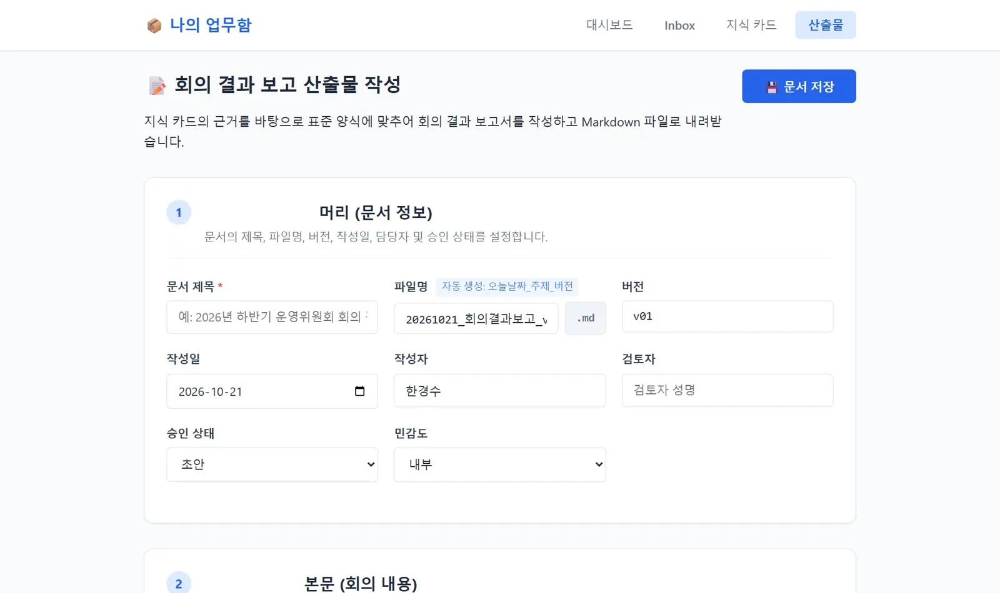
15차시를 마친 화면 — 시범 실행에서 실제로 만든 모습(가상 자료). 내 화면은 모양이 조금 달라도 됩니다.
준비물
10차시에 만든 지식 카드 3건 이상과 data/cards.js
AGY, 크롬, workbox 폴더
샘플 산출물: 한경수 씨의 「9월 운영위원회 결과 보고」(가상, 종이본)
문서 템플릿 양식(아래 실습지)
먼저 이해하기
회사마다 보고서 양식이 있습니다. 양식이 정해져 있으면 쓰는 사람은 무엇을 빠뜨렸는지 알고, 결재하는 사람은 늘 같은 자리만 보면 됩니다. 산출물 템플릿은 이 사내 양식을 「나의 업무함」 안에 넣는 일입니다. 오늘 칸을 고정해 두어야 다음 차시에 AI가 초안을 써도 매번 같은 모양으로 받을 수 있습니다.
수용 기준을 적습니다. 예) "카드 두 장을 고르면 근거 칸에 카드 제목·출처·원본 버전이 채워진다." "같은 문서를 두 번 저장하면 v01, v02 두 파일이 남는다."
나. 템플릿 파일과 산출물 화면 만들기
AGY에서 아래 요청 1을 보냅니다. 계획 카드에서 만들 파일이 docs\템플릿_회의결과보고.md, outputs.html, data/outputs.js 인지, 고칠 파일이 index.html, app.js, style.css 인지 읽고 허락합니다.
docs\템플릿_회의결과보고.md 를 메모장으로 열어 실습지의 칸이 모두 들어 있는지 대조합니다.
✖ 빠진 칸이 있으면: "템플릿에 '확인 필요' 칸만 더해 줘"처럼 한 칸씩 요청합니다.
다. 문서 한 건을 만들어 저장하기
크롬에서 index.html 을 열고 위쪽 메뉴의 '산출물'을 눌러 outputs.html 에 들어갑니다.
→ 이렇게 보이면 됩니다: 템플릿 칸이 순서대로 보이고, 오른쪽에 지식 카드 목록이 있습니다.
문서 제목에 "10월 운영위원회 결과 보고"를 넣고, 관련 카드 두 장을 고릅니다.
→ 이렇게 보이면 됩니다: 근거 칸에 [근거 1], [근거 2] 와 카드 제목·출처·원본 버전이 채워지고, 파일명 칸에 오늘날짜_운영위원회결과보고_v01 이 보입니다.
본문 칸에 한두 줄을 직접 써 보고 '문서 저장'을 누릅니다. 내려받은 .md 파일을 workbox\outputs 로 옮깁니다(6차시와 같은 방법).
본문을 한 줄 고쳐 다시 '문서 저장'을 누릅니다.
→ 이렇게 보이면 됩니다: 파일명이 _v02 로 바뀌고, outputs 폴더에 v01 과 v02 가 함께 남습니다.
✖ 같은 이름으로 덮어써지면: AGY에게 아래 요청 2를 보냅니다.
AGY에게 "산출물 목록을 갱신해 줘"라고 보낸 뒤 index.html 을 F5 로 엽니다.
→ 이렇게 보이면 됩니다: '최근 산출물' 칸에 방금 저장한 문서가 보입니다.
AI에게 건네는 말
어디에 입력하나요: '시작' 단추를 누르고 Antigravity 를 쳐서 AGY를 엽니다. 왼쪽에 workbox 프로젝트가 열려 있는지 먼저 봅니다. 화면 아래쪽 채팅 입력칸(에이전트에게 말을 거는 칸)을 누르고 아래 글을 붙여 넣은 뒤 Enter 로 보냅니다. AGY가 계획이나 권한 확인 카드를 먼저 보여 주면, 무엇을(동작) 어디에(대상) 하려는지 읽고 workbox 폴더 안의 일일 때만 허락합니다.
요청 1:
'회의 결과 보고' 산출물 템플릿을 만들어 줘. 먼저 docs/템플릿_회의결과보고.md에 칸을 정리해 줘. 머리는 문서 제목·파일명·버전·작성일·작성자·검토자·승인 상태(초안/검토 중/승인)·민감도, 본문은 개요·결정 사항·할 일(담당·기한)·확인 필요, 근거는 카드 제목·출처(원본 위치)·원본 버전이야. 다음으로 outputs.html을 새로 만들어서 이 칸을 순서대로 보여 주고, data/cards.js의 카드를 골라 넣으면 근거 칸에 [근거 1]처럼 번호와 카드 정보가 채워지게 해 줘. 파일명은 '오늘날짜_주제_v01' 형식으로 자동으로 만들고, '문서 저장'을 누르면 Markdown 파일로 내려받게 해 줘. 같은 제목으로 다시 저장하면 v02, v03처럼 버전을 올려 줘. 모든 화면 위쪽 메뉴에 '산출물'(outputs.html)을 더해 줘. outputs 폴더의 파일 목록으로 data/outputs.js를 만들어 index.html의 '최근 산출물' 칸이 최근 3건을 읽게 하고, 내가 '산출물 목록을 갱신해 줘'라고 하면 cards.js처럼 다시 만들어 줘. 카드 파일(knowledge/*.md)은 고치지 마. 다 되면 내가 확인할 순서를 알려 줘. 확인용 테스트 스크립트는 따로 만들거나 실행하지 마.
요청 2(고칠 때 — 한 번에 한 가지만):
같은 제목으로 다시 저장해도 파일명이 v01 그대로야. 저장할 때 버전 번호를 하나 올리는 부분만 고쳐 줘. 다른 기능은 바꾸지 마. 확인용 테스트 스크립트는 따로 만들거나 실행하지 마.
템플릿과 샘플 문서에는 실제 고객 정보·주민번호·비밀번호·API 키를 넣지 않습니다. (AGY 화면의 글자는 버전에 따라 조금 다를 수 있습니다.)
실습지
칸 이름
꼭 필요한 이유
누가 채우나(사람/카드/화면/AI)
예시
오늘의 확인
[ ] 요청 전에 칸 이름과 "누가 채우나"를 실습지에 적었다.
[ ] docs\템플릿_회의결과보고.md 에 실습지의 칸이 모두 들어 있다.
[ ] 카드를 고르자 근거 칸에 카드 제목·출처·원본 버전이 채워졌다.
[ ] workbox\outputs 에 같은 문서의 v01 과 v02 가 함께 남아 있다.
[ ] 대시보드 '최근 산출물' 칸에 저장한 문서가 보인다.
다음 차시 예고
산출물 화면이 템플릿과 카드 근거를 묶은 프롬프트를 만들어 주면, 그것을 제미나이에 넣어 정해진 칸으로 초안을 받습니다. 근거를 대조하고 검토자가 승인해 문서 1건을 완성합니다.
4부 · 자동화 실행과 AI 초안 · 16차시
16차시. 시스템 구축 ⑫: AI 초안 생성·검수
오늘의 목표
산출물 화면이 템플릿과 지식 카드를 묶어 만든 프롬프트를 제미나이에 넣고, 정해진 칸으로 초안을 받습니다. 그 초안을 앱에 다시 붙여 넣어 문장마다 근거를 대조하고, 검토자가 승인 상태를 정해 문서 1건을 완성합니다.
오늘 손에 남는 것
산출물 ⑧ 근거 표시 문서 1건 — 「10월 운영위원회 결과 보고」의 문장마다 [근거 n] 이 달려 있고, 검토자 이름과 승인 상태 '승인'이 적힌 채 outputs 폴더에 저장된 문서입니다.
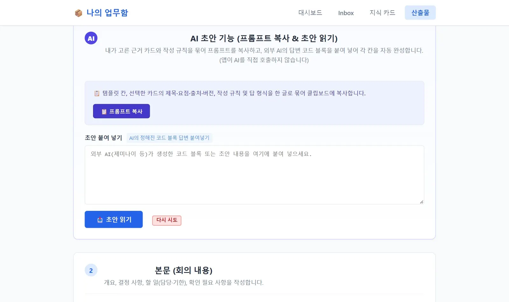
16차시를 마친 화면 — 시범 실행에서 실제로 만든 모습(가상 자료). 내 화면은 모양이 조금 달라도 됩니다.
준비물
15차시의 outputs.html 과 「회의 결과 보고」 템플릿
지식 카드 3건 이상, 제미나이 웹(https://gemini.google.com), AGY, 크롬
검수표(아래 실습지)
먼저 이해하기
새로 온 직원에게 보고서를 맡길 때를 떠올려 보세요. 사내 양식과 참고 자료 묶음을 함께 건네고, "자료에 없는 말은 쓰지 말고, 모르는 것은 따로 적어 달라"고 부탁합니다. 초안이 오면 자료와 대조하고, 도장은 내가 찍습니다. 오늘 제미나이에게 하는 일이 이것입니다.
프롬프트 템플릿: 앱이 템플릿의 칸, 고른 카드의 요점과 출처, 지킬 규칙을 한 묶음의 요청문으로 만들어 줍니다. 10차시에 배운 RAG의 '붙인다' 단계를 앱이 대신하는 것입니다.
구조화 출력: 제미나이에게 정해진 칸 이름과 순서로만 답하게 합니다. 칸이 고정되어야 앱이 초안을 칸별로 나눠 읽고, 근거 없는 문장을 골라낼 수 있습니다.
사람이 중간 다리가 되는 이유: 앱이 AI를 직접 부르려면 API 키(서비스를 쓰는 비밀 열쇠)가 필요하고, 그 열쇠가 파일에 남으면 GitHub에 함께 올라갈 위험이 있습니다. 그래서 복사와 붙여 넣기를 사람이 하고, 그 사이에 한 번 더 읽습니다.
구조화 출력 — AI의 답을 미리 정한 칸 이름과 순서로 받는 것. 양식이 정해진 보고서와 같습니다
검수 — 초안의 문장을 근거 원본과 하나씩 대조해 맞는지 확인하는 일
따라 하기
가. 산출물 화면에 복사·붙여 넣기 기능 더하기
수용 기준을 적습니다. 예) "근거가 빈 문장은 빨간 '근거 없음'으로 보인다." "검토자를 비우면 '승인' 단추가 눌리지 않는다."
AGY에서 아래 요청 1을 보냅니다. 계획 카드에서 고칠 파일이 outputs.html, app.js 인지 읽고 허락합니다.
나. 제미나이로 초안 받기
크롬에서 outputs.html 을 엽니다. 문서 제목 "10월 운영위원회 결과 보고"를 넣고 카드 두세 장을 고른 뒤 '프롬프트 복사'를 누릅니다.
새 탭에서 제미나이를 열고(아래 표준문) 입력칸에 Ctrl + V 로 붙여 넣어 보냅니다.
답의 회색 코드 블록 오른쪽 위 복사 아이콘을 누릅니다. (화면의 글자와 아이콘은 버전에 따라 조금 다를 수 있습니다.)
✖ 코드 블록 없이 설명 글로 답하면: 제미나이에 아래 재요청문을 보냅니다.
outputs.html 로 돌아와 '초안 붙여 넣기' 칸에 붙여 넣고 '초안 읽기'를 누릅니다.
→ 이렇게 보이면 됩니다: 개요·결정 사항·할 일·확인 필요가 각 칸에 들어가고, 문장마다 [근거 n] 이 붙습니다.
✖ "형식을 읽을 수 없습니다"가 뜨면: 붙여 넣은 글을 지우지 말고, 제미나이에 재요청한 뒤 다시 붙여 '다시 시도'를 누릅니다.
다. 검수하고 승인하기
결정 사항 문장마다 근거 카드를 열고, 카드의 출처에 적힌 원본까지 가서 정말 그렇게 적혀 있는지 대조합니다. 결과를 실습지에 적습니다.
'근거 없음'이나 원본과 다른 문장은 고치거나 지우거나 '확인 필요'로 옮깁니다.
검토자 칸에 내 이름을 적고, 승인 상태를 '초안' → '검토 중' → '승인' 순서로 바꿉니다.
→ 이렇게 보이면 됩니다: 실행 기록에 '산출물 승인' 한 줄이 생깁니다.
'문서 저장'으로 받은 파일을 workbox\outputs 로 옮기고, "산출물 목록을 갱신해 줘"를 AGY에 보냅니다. '로그 내보내기'로 data\log.json 도 새로 저장합니다.
AI에게 건네는 말
어디에 입력하나요: '시작' 단추를 누르고 Antigravity 를 쳐서 AGY를 엽니다. 왼쪽에 workbox 프로젝트가 열려 있는지 먼저 봅니다. 화면 아래쪽 채팅 입력칸(에이전트에게 말을 거는 칸)을 누르고 아래 글을 붙여 넣은 뒤 Enter 로 보냅니다. AGY가 계획이나 권한 확인 카드를 먼저 보여 주면, 무엇을(동작) 어디에(대상) 하려는지 읽고 workbox 폴더 안의 일일 때만 허락합니다.
요청 1(AGY):
outputs.html에 AI 초안 기능을 더해 줘. 앱이 AI를 직접 부르지는 마. '프롬프트 복사' 단추는 템플릿 칸, 내가 고른 카드의 제목·요점·출처·원본 버전, 그리고 규칙("카드에 없는 내용은 쓰지 말 것, 모르는 것은 확인필요에 적을 것, 결정사항 문장마다 근거 카드 제목을 적을 것, 설명 없이 정해진 형식의 코드 블록 하나로만 답할 것")과 답 형식(제목·개요·결정사항·할일·확인필요)을 한 글로 묶어 클립보드에 복사해 줘. '초안 붙여 넣기' 칸과 '초안 읽기' 단추를 만들어, 붙여 넣은 답을 칸별로 채우고 문장마다 [근거 n]을 달아 줘. 형식이 틀리면 채우지 말고 이유와 '다시 시도'를 보여 줘. 근거가 비었거나 카드 목록에 없는 제목이면 그 문장을 빨간 '근거 없음'으로 표시해 줘. 검토자가 비면 '승인'을 막고, 승인 상태가 바뀔 때마다 14차시 실행 로그에 한 줄 남겨 줘. 다 되면 확인 순서를 알려 줘. 확인용 테스트 스크립트는 따로 만들거나 실행하지 마.
어디에 입력하나요: PC에서 크롬을 열고 주소창에 https://gemini.google.com 을 입력해 들어갑니다. 구글 계정으로 로그인돼 있으면 화면 아래쪽에 입력칸이 보입니다. 그 칸을 누르고 아래 글을 붙여 넣은 뒤 Enter 를 누르세요. (줄을 바꿀 때는 Shift + Enter.) 답을 끝까지 읽고, 모르는 말은 "○○가 무슨 뜻이야?" 하고 이어서 묻습니다.
붙여 넣을 글은 '프롬프트 복사' 단추가 만든 글 전체입니다. 형식이 깨졌을 때만 이어서 보냅니다.
방금 답을 설명 없이, 내가 처음에 정한 칸 이름과 순서 그대로 코드 블록 하나로만 다시 써 줘. 카드에 없는 내용은 빼고 확인필요로 옮겨 줘.
제미나이에 붙여 넣기 전에 프롬프트를 한 번 읽어 실제 고객 이름·연락처·주민번호·비밀번호·API 키가 없는지 확인합니다.
실습지
결정 사항 문장(앞 열 글자)
근거 카드
원본과 일치(☐ 맞음 / ✖ 다름)
조치(유지/수정/삭제/확인 필요)
오늘의 확인
[ ] '프롬프트 복사'로 만든 글을 읽고 개인정보가 없는 것을 확인한 뒤 제미나이에 보냈다.
[ ] 제미나이 답을 앱에 붙여 칸별로 채웠고, 근거 없는 문장이 빨갛게 표시되는 것을 보았다.
[ ] 결정 사항 문장마다 원본까지 대조해 실습지를 채웠다.
[ ] 검토자와 승인 상태 '승인'이 적힌 문서가 workbox\outputs 에 있고, 실행 기록에 승인 줄이 남았다.
다음 차시 예고
Inbox → 검색 → 산출물로 이어지는 흐름 전체를 처음부터 시험합니다. 오류를 재현해 고치고, 공개하기 전에 개인정보와 비밀키가 남아 있지 않은지 점검합니다.
5부 · 점검하고 공개하다 · 17차시
17차시. 시스템 구축 ⑬: 기능 테스트와 공개 점검
📎 이 차시의 샘플 자료 받기
교실에서는 강사가 나눠 준 샘플자료 폴더를 씁니다. 집에서는 마이웨이 아카데미 C5 1강에 무료 회원으로 로그인하면 맨 위 「이 수업의 실습 자료」 상자에서 샘플자료.zip(회의록·견적서·신청서·사진 목록 등 12개)과 파일별로 내려받을 수 있습니다. 내 PC의 샘플자료 폴더에 풀어 두고 씁니다. 모두 학습용 가상 자료입니다.
오늘의 목표
Inbox에서 산출물까지 한 건을 처음부터 끝까지 흘려 보며 고장 난 곳을 찾아 고칩니다. 그리고 workbox 폴더에 개인정보나 비밀키(API 키·비밀번호)가 들어 있지 않은지 점검합니다.
오늘 손에 남는 것
다음 차시 산출물 ⑨ 비공개 작업 저장소의 GitHub 기록의 앞 절반입니다. 오늘 채운 기능·공개 점검표를 통과한 workbox 만 18차시에 GitHub로 올립니다.
준비물
실습용 PC, 크롬, AGY(workbox 프로젝트가 열린 상태)
기능 테스트 체크리스트(이 교안의 실습지)
샘플 자료 1건(한경수 씨의 가상 회의록 등, 지금까지 쓴 것)
4차시 설계서의 수용 기준, 연필
GitHub 계정 — 사전 과제: 18차시 전에 집에서 크롬으로 https://github.com/signup 에 들어가 안내대로 계정을 만들고, 받은 메일로 이메일 확인까지 끝냅니다. 아이디(username)는 20차시 공개 주소에 들어가므로 실명이 드러나지 않는 영문 소문자로 짧게 정합니다. 아이디와 비밀번호는 수첩에 적어 둡니다.
먼저 이해하기
새 사무실로 이사하는 날을 떠올려 보세요. 짐을 트럭에 싣기 전에 두 가지를 합니다. 집기가 제대로 돌아가는지 한 번씩 켜 보고, 남에게 보이면 안 되는 서류는 따로 빼 둡니다. 18차시부터 workbox 는 GitHub(파일과 변경 이력을 온라인에 보관하는 서비스)로 이사합니다.
기능 테스트는 기능 하나씩이 아니라 한 건의 일이 끝까지 흘러가는지를 봅니다. 결재 서류가 보관까지 실제로 돌아야 절차가 완성된 것과 같습니다. 화면마다 따로는 잘 돌다가 이어 붙인 자리에서 끊기는 일이 가장 흔합니다.
오류를 찾으면 바로 고쳐 달라고 하지 않고 먼저 재현합니다. 같은 순서로 다시 해서 같은 문제가 또 나와야 AGY에게 정확히 설명하고, 고친 뒤에도 같은 순서로 확인할 수 있습니다.
기능 테스트 — 정해진 순서대로 써 보며 기대한 결과가 나오는지 확인하는 일
재현 — 같은 조건과 순서로 다시 해서 같은 오류가 또 나오게 하는 일
비밀키 — 서비스에 들어가는 열쇠 글자. API 키(프로그램이 외부 서비스를 쓸 때 내는 출입증 글자), 비밀번호, 토큰 등
개인정보 — 이름과 함께 쓰인 연락처·주민번호·주소·계좌처럼 특정 사람을 알아볼 수 있는 정보
우리 앱은 처음부터 API 키 없이 만들었지만, 지식 카드나 내보낸 data/inbox.json 에 실제 정보가 섞여 들어갔을 수 있어 점검합니다. 한 번 온라인에 올라간 비밀번호는 지워도 이력에 남습니다.
따라 하기
가. 한 건을 끝까지 흘려 보기 (크롬)
workbox 의 index.html 을 크롬으로 엽니다.
실습지 1번 행부터 차례로 합니다. Inbox 화면에서 샘플 자료 1건을 새로 '등록'합니다.
→ 이렇게 보이면 됩니다: 목록 맨 위에 상태 '신규'로 한 줄이 생깁니다.
그 건의 '검토 시작'을 누르고, 처리 근거를 적어 '보관'합니다.
민감도 '민감'인 건을 하나 더 '등록'해 승인 대기에 오르는지, '승인'하면 실행 기록에 한 줄이 남는지 봅니다.
'지식 카드' 화면에서 낱말 하나로 검색해 카드와 원본 위치가 나오는지 봅니다.
'산출물' 화면에서 '프롬프트 복사'가 되는지, 대시보드 숫자가 처리한 만큼 바뀌었는지 봅니다.
행마다 결과 칸에 '통과' 또는 '오류'를 적습니다.
나. 오류 재현하고 한 가지씩 고치기 (AGY)
'오류'가 나온 행이 있으면 같은 순서로 한 번 더 해 봅니다. 또 나오면 재현된 것입니다.
실습지 아래 여백에 '한 일 / 기대한 결과 / 실제 결과'를 한 줄씩 적습니다.
아래 '첫 번째 요청'에 그 세 줄을 넣어 AGY에게 보냅니다. 오류가 여러 개면 한 번에 하나씩 보냅니다.
AGY가 고치면 크롬에서 F5 로 새로 고친 뒤, 8번과 같은 순서로 다시 해 봅니다.
✖ 이렇게 되면: 고친 뒤 다른 화면이 망가졌다면 가 단계를 처음부터 다시 돌리고, 망가진 곳을 새 오류로 적습니다.
모두 통과하면 '내보내기'로 저장합니다.
다. 개인정보·비밀키 점검 (AGY → 사람 눈)
아래 '두 번째 요청'을 AGY에게 보냅니다. 파일을 읽기만 하고 고치지 않는 요청입니다. 권한 카드에 '수정·삭제'가 보이면 거절합니다.
→ 이렇게 보이면 됩니다: 파일 이름과 줄 번호가 붙은 의심 목록, 또는 "찾지 못함"과 확인한 파일 목록이 나옵니다.
목록의 줄을 메모장으로 직접 열어 확인합니다. 실제 정보면 가상 정보로 바꾸거나 그 줄을 지우고 저장합니다.
knowledge 폴더와 outputs 폴더의 파일 이름도 눈으로 훑습니다. 실명·회사명이 든 파일 이름은 F2 로 바꿉니다.
AGY가 "찾지 못함"이라고 해도 실습지의 공개 점검 행은 사람이 직접 보고 표시합니다.
AI에게 건네는 말
어디에 입력하나요: '시작' 단추를 누르고 Antigravity 를 쳐서 AGY를 엽니다. 왼쪽에 workbox 프로젝트가 열려 있는지 먼저 봅니다. 화면 아래쪽 채팅 입력칸(에이전트에게 말을 거는 칸)을 누르고 아래 글을 붙여 넣은 뒤 Enter 로 보냅니다. AGY가 계획이나 권한 확인 카드를 먼저 보여 주면, 무엇을(동작) 어디에(대상) 하려는지 읽고 workbox 폴더 안의 일일 때만 허락합니다.
실제 고객 정보·주민번호·비밀번호·API 키는 AI에게도, 저장소에도 넣지 않습니다.
첫 번째 요청 — 오류 하나 고치기 (괄호 안을 내 기록으로 바꿉니다)
기능 테스트 중 재현되는 오류가 하나 있어. 한 일: (…). 기대한 결과: (…). 실제 결과: (…). 원인을 먼저 설명하고, 이 오류 하나만 고쳐 줘. 다른 기능과 화면 모양은 바꾸지 마. 고친 뒤 내가 크롬에서 같은 순서로 확인할 방법을 세 줄로 알려 줘. 확인용 테스트 스크립트는 따로 만들거나 실행하지 마.
두 번째 요청 — 개인정보·비밀키 점검 (읽기만)
workbox 폴더의 모든 파일을 읽고, 공개되면 안 되는 정보로 보이는 곳을 찾아 줘. 찾을 것: 사람 이름과 함께 쓰인 휴대폰 번호·이메일·주소, 주민등록번호 모양(6자리-7자리 숫자), 계좌번호 모양, 비밀번호·password·API key·token·secret 같은 낱말과 그 뒤의 값, 내 컴퓨터의 실제 폴더 경로. 파일은 하나도 고치지 말고, 파일 이름·줄 번호·의심 이유를 표로 보여 줘. 애매한 것도 '확인 필요'로 넣고, 찾지 못했으면 확인한 파일 목록을 보여 줘. 확인용 테스트 스크립트는 따로 만들거나 실행하지 마.
실습지
기능·공개 점검표 (점검일: )
번호
점검 항목
결과(통과/오류)
조치·메모
1
새 항목 등록 → 목록에 '신규'로 보인다
2
신규 → 검토 → 보관, 처리 근거가 남는다
3
'민감' 항목이 승인 대기로 가고, 승인 시 로그가 남는다
4
지식 검색 결과에 원본 위치가 보인다
5
산출물 프롬프트 복사·대시보드 숫자 갱신
6
개인정보(실명+연락처·주민번호·주소·계좌) 없음
7
비밀키(API 키·비밀번호·토큰) 없음
8
파일 이름·폴더 경로에 실명·회사명 없음
9
AGY가 남긴 .bak 백업·시험용 파일(test_…) 정리
오늘의 확인
[ ] 샘플 1건을 등록부터 산출물까지 끝까지 흘려 보았다
[ ] 오류를 같은 순서로 재현한 뒤 한 번에 하나씩 고쳐 달라고 했다
[ ] 고친 뒤 같은 순서로 다시 해서 통과를 확인했다
[ ] AGY의 점검 목록을 내 눈으로 열어 보고 개인정보·비밀키 행을 표시했다
[ ] GitHub 계정을 만들고 이메일 확인까지 마쳤다
다음 차시 예고
점검을 통과한 workbox 를 GitHub Desktop으로 비공개 저장소에 올립니다. 변경 이력이 한 줄씩 쌓이는 모습을 직접 확인합니다.
5부 · 점검하고 공개하다 · 18차시
18차시. 시스템 구축 ⑭: GitHub 커밋·푸시
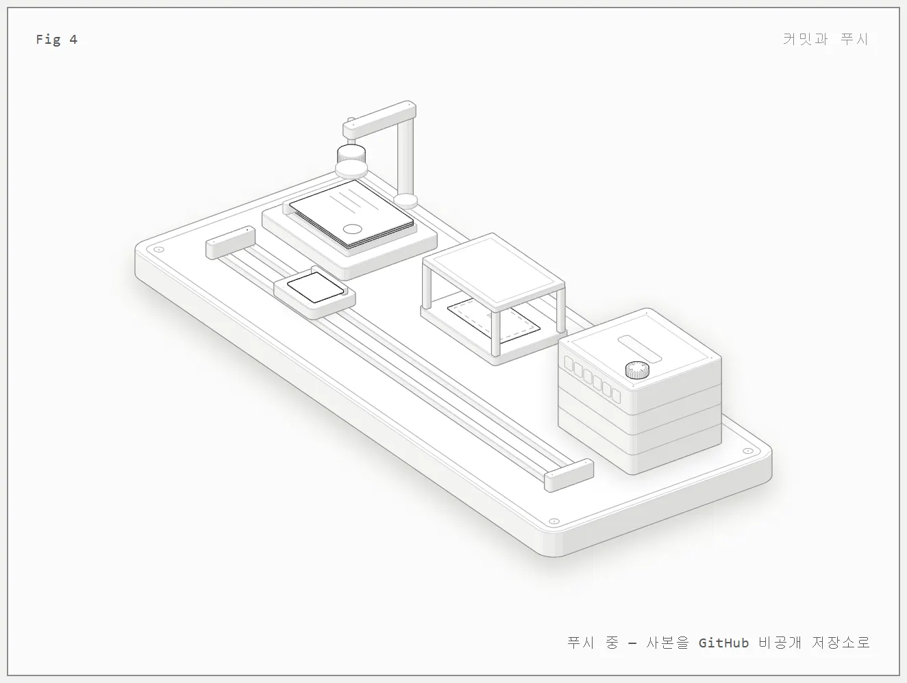
Fig 4 · 커밋과 푸시 — 구조를 실물 기계로 본 그림. 마우스를 올리면 멈추고, 새 창으로 크게 보기.
오늘의 목표
GitHub Desktop으로 workbox 폴더를 비공개 저장소에 올리고, 변경을 검토한 뒤 커밋·푸시해 버전 이력이 쌓이는 것을 확인합니다.
오늘 손에 남는 것
산출물 ⑨ 비공개 작업 저장소의 GitHub 기록 — GitHub에 비공개 저장소 workbox 가 있고, 그 안에 커밋 두 건 이상이 이력으로 남은 상태입니다.
준비물
실습용 PC, 크롬, GitHub Desktop(강사가 사전 설치), AGY
GitHub 계정(17차시 사전 과제로 만든 아이디·비밀번호 수첩)
17차시 기능·공개 점검표(모든 행 '통과')
먼저 이해하기
결재 문서 대장을 떠올려 보세요. 문서를 고칠 때마다 날짜·고친 사람·고친 이유를 한 줄 적어 두면, 석 달 뒤에도 "언제 무엇이 왜 바뀌었는지" 찾을 수 있습니다. Git(깃)은 이 대장을 컴퓨터가 대신 써 주는 도구입니다. GitHub(깃허브)는 그 대장과 파일을 온라인 금고에 보관해 주는 곳입니다. PC가 고장 나도 금고에는 남습니다.
용어 네 개만 알면 됩니다.
저장소(repository) — Git이 이력을 관리하는 폴더 하나. 내 PC의 workbox 가 저장소가 되고, GitHub에도 같은 이름의 저장소가 생깁니다
커밋(commit) — 지금 상태를 한 줄 설명과 함께 대장에 기록하는 일. 결재 도장에 해당합니다
푸시(push) — 내 PC에 쌓인 커밋을 GitHub 금고로 보내는 일
비공개(Private) — 나와 내가 초대한 사람만 볼 수 있는 저장소 상태
순서는 늘 같습니다. 고친다 → 바뀐 파일을 검토한다 → 커밋한다 → 푸시한다. 커밋만 하고 푸시하지 않으면 기록은 내 PC에만 있습니다. 오늘은 AGY에게 git 명령을 시키지 않고, 눈으로 보며 누르는 GitHub Desktop 한 가지로 통일합니다.
따라 하기
가. GitHub Desktop에 로그인하기
'시작' 단추를 누르고 GitHub Desktop 을 쳐서 엽니다.
위쪽 메뉴 'File' → 'Options'를 누릅니다.
'Accounts' 칸에서 GitHub.com에 로그인하는 'Sign into' 버튼을 누릅니다.
'Continue With Browser'를 누르면 크롬이 열립니다. 아이디와 비밀번호를 넣고 'Sign in'을 누릅니다.
크롬에 나오는 안내를 따라 GitHub Desktop으로 돌아갑니다.
→ 이렇게 보이면 됩니다: 'Accounts' 칸에 내 아이디가 보입니다.
나. workbox 를 저장소로 만들고 첫 커밋하기
'File' → 'Add local repository'를 누릅니다.
'Choose...'를 누르고 C:\사용자\(내 계정 이름)\workbox 폴더를 고릅니다.
아직 Git 저장소가 아니라는 안내와 함께 'create a repository' 링크가 보이면 그 링크를 누릅니다.
새 저장소 창에서 'Name'이 workbox 인지 봅니다. 'Initialize this repository with a README'는 체크를 끕니다(README.md가 이미 있습니다). 'Create repository'를 누릅니다.
왼쪽 'Changes' 칸에 파일 목록이 나옵니다. 한 줄씩 눌러 오른쪽 내용을 훑어봅니다. 이것이 변경 검토입니다.
✖ 이렇게 되면: 목록에 실명·연락처가 든 파일이 보이면 커밋하지 말고 17차시 다 단계로 돌아갑니다.
왼쪽 아래 'Summary' 칸에 17차시 점검 통과본 이라고 씁니다.
그 아래 'Commit to main' 버튼(브랜치 이름에 따라 'main' 자리가 다를 수 있습니다)을 누릅니다.
다. 비공개로 올리기(푸시)
위쪽 'Publish repository'를 누릅니다.
'Name'이 workbox 인지 보고, 'Keep this code private'에 체크가 되어 있는지 반드시 확인합니다. 'Organization'이 보이면 'None'을 고릅니다.
'Publish Repository'를 누릅니다.
'Repository' 메뉴의 'View on GitHub'로 크롬을 엽니다.
→ 이렇게 보이면 됩니다: 저장소 이름 옆에 'Private' 표시가 있고, 내 파일 목록이 보입니다.
라. 두 번째 커밋으로 이력 쌓기
아래 요청문을 AGY에게 보내 README.md 한 곳만 고칩니다.
GitHub Desktop의 'Changes' 칸에 README.md 한 줄이 생깁니다. 눌러 보면 더해진 줄이 초록색으로 보입니다.
'Summary'에 README 운영 기록 칸 추가 를 쓰고 커밋합니다.
위쪽 'Push origin'을 누릅니다.
왼쪽 'History' 칸을 누릅니다.
→ 이렇게 보이면 됩니다: 커밋 두 줄이 날짜와 함께 보입니다. 크롬의 GitHub 화면을 새로 고쳐도 같은 기록이 보입니다.
(화면의 글자는 버전에 따라 조금 다를 수 있습니다.)
AI에게 건네는 말
어디에 입력하나요: '시작' 단추를 누르고 Antigravity 를 쳐서 AGY를 엽니다. 왼쪽에 workbox 프로젝트가 열려 있는지 먼저 봅니다. 화면 아래쪽 채팅 입력칸(에이전트에게 말을 거는 칸)을 누르고 아래 글을 붙여 넣은 뒤 Enter 로 보냅니다. AGY가 계획이나 권한 확인 카드를 먼저 보여 주면, 무엇을(동작) 어디에(대상) 하려는지 읽고 workbox 폴더 안의 일일 때만 허락합니다.
실제 고객 정보·주민번호·비밀번호·API 키는 AI에게도, 저장소에도 넣지 않습니다. 비공개 저장소라도 마찬가지입니다.
README.md 맨 아래에 '운영 기록'이라는 제목을 만들고, 그 아래에 "날짜 / 바꾼 것 / 이유" 세 칸짜리 표를 만들어 줘. 첫 줄에 오늘 날짜와 "GitHub 비공개 저장소에 첫 기록"을 적어 줘. 다른 파일은 건드리지 말고, git 명령은 실행하지 마. 끝나면 바뀐 줄만 보여 줘. 확인용 테스트 스크립트는 따로 만들거나 실행하지 마.
실습지
나의 커밋 대장
번호
날짜
바꾼 파일
Summary(한 줄 설명)
푸시했나(○/×)
1
2
3
4
저장소 주소: https://github.com//workbox
오늘의 확인
[ ] GitHub Desktop에 내 아이디로 로그인했다
[ ] 커밋 전에 'Changes' 목록을 한 줄씩 열어 검토했다
[ ] 'Keep this code private'를 확인하고 올렸으며, GitHub 화면에 'Private' 표시가 보인다
[ ] 'History'와 GitHub 화면 양쪽에서 커밋 두 건을 확인했다
다음 차시 예고
지금 저장소는 나만 보는 금고입니다. 19차시에는 남에게 보여 줄 시연본 workbox-demo 를 따로 만들고, 개인 자료는 한 줄도 옮기지 않습니다.
5부 · 점검하고 공개하다 · 19차시
19차시. 시스템 구축 ⑮: 공개용 시연본 분리
📎 이 차시의 샘플 자료 받기
교실에서는 강사가 나눠 준 샘플자료 폴더를 씁니다. 집에서는 마이웨이 아카데미 C5 1강에 무료 회원으로 로그인하면 맨 위 「이 수업의 실습 자료」 상자에서 샘플자료.zip(회의록·견적서·신청서·사진 목록 등 12개)과 파일별로 내려받을 수 있습니다. 내 PC의 샘플자료 폴더에 풀어 두고 씁니다. 모두 학습용 가상 자료입니다.
workbox 옆에 공개용 폴더 workbox-demo 를 만들고, 화면 파일과 비식별 가상 샘플만 담습니다. 공개 범위 검수표를 통과한 상태로 첫 커밋까지 합니다.
오늘 손에 남는 것
다음 차시 산출물 ⑩ 공개 시연 페이지와 개인 운영 규칙의 앞 절반입니다. 개인 자료가 한 줄도 없는 workbox-demo 폴더와, 그것을 확인한 공개 범위 검수표가 남습니다.
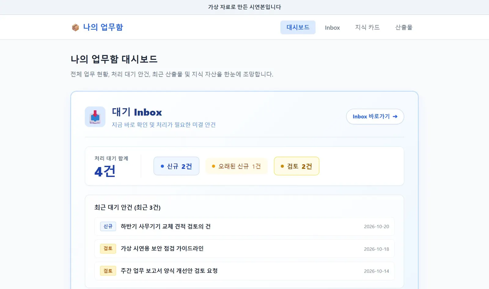
19차시를 마친 화면 — 시범 실행에서 실제로 만든 모습(가상 자료). 내 화면은 모양이 조금 달라도 됩니다.
준비물
실습용 PC, 크롬, 파일 탐색기, AGY, GitHub Desktop
공개 범위 검수표(이 교안의 실습지)
비식별 샘플: 가상 인물 한경수 씨·오미선 씨의 회의록·견적서·교육 신청서 등
먼저 이해하기
회사 홍보관을 떠올려 보세요. 손님에게 보여 줄 제품은 사무실 책상이 아니라 홍보관에 따로 진열합니다. workbox 는 사무실이고, 오늘 만드는 workbox-demo 는 홍보관입니다.
핵심은 지우는 것이 아니라 옮겨 담는 것입니다. workbox 에서 개인 자료를 지워 공개하면 하나만 남아도 그대로 나가고, 18차시 커밋 이력 속에는 지운 파일도 남아 있습니다. 그래서 공개용은 빈 폴더에서 새로 시작하고, 필요한 것만 골라 복사합니다.
옮길 것과 옮기지 않을 것은 이렇게 나눕니다.
옮긴다: 화면 파일 여섯 개(index.html, inbox.html, knowledge.html, outputs.html, app.js, style.css)와 AGY가 따로 만든 .js 파일(inbox.js 등), 가상 샘플로 새로 만든 data/·knowledge/, 공개용으로 다시 쓴 README.md
옮기지 않는다: data/ 의 내 저장본(inbox.json, log.json)과 목록(cards.js, outputs.js), 내 knowledge/ 카드, outputs/, docs/, 숨김 폴더 .git(18차시 이력이 통째로 따라갑니다), AGY가 남긴 .bak 백업과 시험용 파일(test_…)
비식별 — 누구의 자료인지 알아볼 수 없게 만든 상태. 이 과정에서는 처음부터 가상 인물로 만든 자료만 씁니다
시연본 — 남에게 보여 주려고 따로 만든 사본. 기능은 같고 자료만 가상입니다
시연 모드 — 브라우저 저장소(localStorage)가 비어 있을 때 가상 샘플을 보여 주는 방식. 처음 들어온 손님도 빈 화면 대신 예시를 봅니다
따라 하기
가. 홍보관 폴더 만들기 (파일 탐색기)
Windows 키 + E 로 탐색기를 열고 C:\사용자\(내 계정 이름) 으로 갑니다. workbox 가 보이는 곳입니다.
빈 곳에서 오른쪽 단추 → '새로 만들기' → '폴더'로 workbox-demo 를 만듭니다. workbox안이 아니라 옆입니다.
workbox 에서 위의 화면 파일 여섯 개와, AGY가 따로 만든 .js 파일(inbox.js·knowledge.js·outputs.js 등, 이름이 test_ 로 시작하거나 .bak 이 붙은 것은 빼고)을 Ctrl 을 누른 채 하나씩 눌러 고릅니다. 하나라도 빠지면 시연본 화면이 비어 보입니다.
오른쪽 단추 → '복사' 후 workbox-demo 에서 '붙여넣기'를 누릅니다. '잘라내기'와 끌어다 놓기는 쓰지 않습니다.
workbox-demo 안에 빈 폴더 data 와 knowledge 를 만듭니다.
→ 이렇게 보이면 됩니다: 화면 파일 여섯 개, .js 파일 몇 개, 빈 폴더 두 개만 있습니다.
나. 가상 샘플 채우기 (AGY)
5차시처럼 AGY 사이드바의 '+'가 붙은 폴더 아이콘 → 'New Project' → 'Add Folder' → workbox-demo 선택 → 'Create'를 누릅니다(Local Mode).
아래 요청문을 보내고, 권한 카드의 대상이 workbox-demo 안일 때만 허락합니다.
Ctrl + Shift + N 으로 크롬 시크릿 창을 열고, 탐색기의 workbox-demo\index.html 을 그 창으로 끌어다 놓습니다. 시크릿 창은 저장소가 비어 있어 시연 모드가 보입니다.
→ 이렇게 보이면 됩니다: 화면 위쪽에 "가상 자료로 만든 시연본" 안내가 있고, Inbox에 한경수 씨·오미선 씨의 가상 항목이 보입니다.
✖ 이렇게 되면: 내 workbox 항목이 보이면 일반 창으로 연 것입니다. 시크릿 창에서 다시 봅니다.
다. 검수하고 첫 커밋 (사람 눈 → GitHub Desktop)
실습지의 검수표를 한 줄씩 채웁니다. 파일은 메모장으로 직접 열어 봅니다. AGY는 작성자 칸 기본값 같은 곳에 내 구글 계정 이름을 몰래 넣어 두기도 하므로, 화면 파일마다 Ctrl + F 로 내 이름을 찾아 봅니다.
한 칸이라도 '아니오'면 고친 뒤 9번을 다시 합니다.
GitHub Desktop에서 'File' → 'Add local repository' → 'Choose...' → workbox-demo 를 고르고, 18차시처럼 'create a repository'로 저장소를 만듭니다.
'Changes' 목록을 한 줄씩 열어 검토하고, 'Summary'에 공개용 시연본 첫 기록 을 써서 커밋합니다. 'Publish repository'는 오늘 누르지 않고, 20차시에 한 번 더 검수한 뒤 누릅니다.
(화면의 글자는 버전에 따라 조금 다를 수 있습니다.)
AI에게 건네는 말
어디에 입력하나요: '시작' 단추를 누르고 Antigravity 를 쳐서 AGY를 엽니다. 왼쪽에 workbox-demo 프로젝트가 열려 있는지 먼저 봅니다. 화면 아래쪽 채팅 입력칸(에이전트에게 말을 거는 칸)을 누르고 아래 글을 붙여 넣은 뒤 Enter 로 보냅니다. AGY가 계획이나 권한 확인 카드를 먼저 보여 주면, 무엇을(동작) 어디에(대상) 하려는지 읽고 workbox-demo 폴더 안의 일일 때만 허락합니다.
실제 고객 정보·주민번호·비밀번호·API 키는 AI에게도, 저장소에도 넣지 않습니다. 공개 저장소는 누구나 봅니다.
이 폴더는 공개 시연본이야. 다른 폴더는 읽지도 고치지도 마. ① knowledge 에 가상 지식 카드 3개(.md)를 만들어 줘. 등장인물은 가상 인물 한경수 씨와 오미선 씨뿐이고, 연락처·주소·실제 기관명은 쓰지 마. ② 그 카드로 data/cards.js 를 갱신해 줘. ③ 가상 Inbox 항목 5건과 실행 로그 2건을 data/sample.js 로 만들고, 브라우저 저장소가 비어 있을 때만 이 샘플을 보여 주는 시연 모드를 넣어 줘. data/outputs.js 에는 가상 산출물 1건을 넣어 줘. ④ 모든 화면 위쪽에 "가상 자료로 만든 시연본입니다" 한 줄을 넣어 줘. ⑤ README.md 를 공개용으로 새로 써 줘(무슨 앱인지, 가상 자료라는 점). ⑥ 화면 파일(.html·.js)에 실제 사람 이름이 기본값이나 예시로 들어가 있으면 모두 '한경수'로 바꿔 줘. 완성 기준: 시크릿 창에서 index.html 을 열면 가상 샘플이 보이고, 개인 정보는 한 줄도 없다. 끝나면 만든 파일 목록을 보여 줘. 확인용 테스트 스크립트는 따로 만들거나 실행하지 마.
실습지
공개 범위 검수표 (workbox-demo, 검수일: )
번호
검수 항목
예/아니오
확인한 파일·메모
1
workbox 의 data/ 저장본을 옮기지 않았다
2
내 knowledge/·outputs/·docs/ 를 옮기지 않았다
3
등장인물은 가상 인물뿐이다(실명·실제 기관명 없음)
4
연락처·주민번호·주소·계좌 모양이 없다
5
비밀번호·API 키·토큰이 없다
6
화면과 README에 "가상 자료" 안내가 있다
7
시크릿 창에서 가상 샘플이 보인다
8
화면 파일(.html·.js)을 메모장으로 열어 Ctrl + F 로 내 이름을 찾았고, 한 곳도 없다
오늘의 확인
[ ] workbox-demo 를 workbox 옆에 새로 만들고, 화면 파일만 복사했다
[ ] AGY 권한 카드의 대상이 workbox-demo 안인지 읽고 허락했다
[ ] 시크릿 창에서 가상 샘플과 "가상 자료" 안내를 확인했다
[ ] 검수표 여덟 칸이 모두 '예'인 상태로 첫 커밋을 했다(아직 공개하지 않음)
다음 차시 예고
검수를 한 번 더 거친 workbox-demo 를 공개 저장소로 올리고 GitHub Pages로 웹 주소를 엽니다. 전 과정을 3분 동안 시연하고, 앞으로 지킬 개인 운영 규칙을 씁니다.
5부 · 점검하고 공개하다 · 20차시
20차시. 시스템 구축 ⑯: 배포·시연·운영 규칙
📎 이 차시의 샘플 자료 받기
교실에서는 강사가 나눠 준 샘플자료 폴더를 씁니다. 집에서는 마이웨이 아카데미 C5 1강에 무료 회원으로 로그인하면 맨 위 「이 수업의 실습 자료」 상자에서 샘플자료.zip(회의록·견적서·신청서·사진 목록 등 12개)과 파일별로 내려받을 수 있습니다. 내 PC의 샘플자료 폴더에 풀어 두고 씁니다. 모두 학습용 가상 자료입니다.
오늘의 목표
workbox-demo 를 공개 저장소로 올리고 GitHub Pages로 웹 주소를 엽니다. 그 주소로 전 과정을 3분 동안 시연하고, 앞으로 이 시스템을 지켜 갈 개인 운영 규칙을 씁니다.
오늘 손에 남는 것
산출물 ⑩ 공개 시연 페이지와 개인 운영 규칙 — 누구나 열 수 있는 https://(내 아이디).github.io/workbox-demo/ 주소 하나와, 언제 기록하고 무엇을 공개하는지 정한 운영 규칙 한 장입니다.
준비물
실습용 PC, 크롬, GitHub Desktop, 휴대폰(주소 점검용)
19차시 공개 범위 검수표(모든 칸 '예')
발표 화면(강의실 프로젝터), 운영 규칙 양식(이 교안의 실습지)
먼저 이해하기
인수인계서를 써 본 분이라면 압니다. 일을 잘 해 놓는 것과, 내가 없어도 그 일이 같은 방식으로 굴러가게 적어 두는 것은 다른 일입니다. 오늘은 두 가지를 마무리합니다. 남에게 보여 줄 시연 페이지, 그리고 석 달 뒤의 내가 읽을 운영 규칙입니다.
GitHub Pages는 공개 저장소의 HTML 파일을 웹 주소로 바로 보여 주는 기능입니다. 우리 앱은 처음부터 서버 없이 도는 정적 웹앱(HTML·CSS·JavaScript 파일만으로 돌아가는 웹 화면)이라 그대로 올라갑니다. 무료 계정에서는 공개 저장소만 Pages를 쓸 수 있습니다. 그래서 19차시에 개인 자료를 뺀 시연본을 따로 만든 것입니다.
공개(Public) 저장소 — 주소만 알면 누구나 파일과 이력을 볼 수 있는 저장소
GitHub Pages — 저장소의 파일을 https://(아이디).github.io/(저장소 이름)/ 주소의 웹 페이지로 보여 주는 기능
배포 — 만든 것을 다른 사람이 쓸 수 있는 곳에 올려 두는 일
운영 규칙 — 시스템을 매일·매주 어떻게 다루고, 사고가 나면 무엇부터 하는지 정한 나만의 업무 규정
따라 하기
가. 마지막 확인 후 공개 저장소로 올리기 (GitHub Desktop)
19차시 검수표를 다시 보고, 크롬 시크릿 창(Ctrl + Shift + N)에서 workbox-demo\index.html 을 한 번 더 열어 봅니다.
GitHub Desktop 왼쪽 위 'Current Repository'에서 workbox-demo 를 고릅니다. workbox 가 아닌지 두 번 봅니다.
이번에는 'Keep this code private'의 체크를 끕니다. 'Publish Repository'를 누릅니다.
'Repository' → 'View on GitHub'로 크롬을 엽니다.
→ 이렇게 보이면 됩니다: 저장소 이름 옆에 'Public' 표시가 있습니다.
✖ 이렇게 되면: 파일 목록에 outputs·docs 나 내 inbox.json 이 보이면 잘못 올린 것입니다. 이 절 끝의 '실수로 공개했을 때' 순서를 따릅니다.
나. GitHub Pages 켜기 (크롬)
저장소 화면 위쪽의 톱니바퀴 모양 'Settings'를 누릅니다.
왼쪽 목록에서 'Pages'를 누릅니다.
'Build and deployment' 아래 'Source'에서 'Deploy from a branch'를 고릅니다.
'Branch'에서 main, 그 옆 폴더 칸에서 /(root) 를 고르고 'Save'를 누릅니다.
몇 분 뒤 F5 로 새로 고칩니다. 반영까지 최대 10분쯤 걸릴 수 있습니다.
→ 이렇게 보이면 됩니다: 같은 화면에 내 사이트 주소와 'Visit site' 버튼이 보입니다.
다. 주소 점검과 3분 시연
시크릿 창 주소창에 https://(내 아이디).github.io/workbox-demo/ 를 입력합니다. 가상 샘플과 "가상 자료" 안내가 보이는지 봅니다.
같은 주소를 휴대폰에서도 열어 봅니다. 실습지 아래 여백에 주소를 적습니다.
발표 화면으로 3분 시연을 합니다. 순서: Inbox에 가상 항목 1건 등록 → 검토·보관 → 지식 검색에서 근거 확인 → 산출물 프롬프트 복사 → 승인과 실행 로그 → 대시보드 숫자 변화.
시연을 보는 사람에게 한 가지를 꼭 말합니다. "여기서 입력한 내용은 각자의 브라우저에만 남고, 저장소로 오지 않습니다."
라. 개인 운영 규칙 쓰기 (제미나이 → 종이)
아래 요청문의 괄호 안을 내 답으로 채워 제미나이에 보냅니다.
받은 초안을 그대로 옮기지 말고, 실습지 칸마다 내가 지킬 수 있는 문장으로 줄여 적습니다.
다 쓴 규칙을 AGY에게 부탁해 workbox\docs\오늘날짜_운영규칙_v01.md 로 저장하고, 18차시처럼 workbox 저장소에 커밋·푸시합니다.
실수로 공개했을 때 — 비밀번호·키가 나갔다면 그 서비스에서 먼저 비밀번호를 바꿉니다. 그다음 저장소 'Settings' 맨 아래 'Danger Zone'의 'Change visibility'로 비공개로 돌립니다. 무료 계정은 비공개로 바꾸면 Pages도 함께 내려갑니다. 파일을 지우고 다시 커밋해도 이력에는 남는다는 점을 기억합니다.
(화면의 글자는 버전에 따라 조금 다를 수 있습니다.)
AI에게 건네는 말
어디에 입력하나요: PC에서 크롬을 열고 주소창에 https://gemini.google.com 을 입력해 들어갑니다. 구글 계정으로 로그인돼 있으면 화면 아래쪽에 입력칸이 보입니다. 그 칸을 누르고 아래 글을 붙여 넣은 뒤 Enter 를 누르세요. (줄을 바꿀 때는 Shift + Enter.) 답을 끝까지 읽고, 모르는 말은 "○○가 무슨 뜻이야?" 하고 이어서 묻습니다.
실제 고객 정보·주민번호·비밀번호·API 키·저장소 주소 속 개인 정보는 AI에게 넣지 않습니다.
나는 혼자 쓰는 업무 자동화 웹앱을 운영해. 개인 자료는 비공개 저장소 workbox 에, 가상 자료로 만든 시연본은 공개 저장소 workbox-demo 에 있어. 아래 내 답을 바탕으로 개인 운영 규칙 초안을 써 줘. 항목은 ① 언제 커밋·푸시하나 ② 공개 전 무엇을 점검하나 ③ 백업은 언제 어디에 ④ 비밀번호·API 키 다루는 법 ⑤ 실수로 공개했을 때 순서 ⑥ 매주 점검할 것 이고, 항목마다 내가 실제로 지킬 수 있는 문장 두 줄 이내로 써 줘. 내 답: 앱을 쓰는 요일(…), 하루 처리 건수(…), 시연본을 고칠 계획(…). 모르는 것은 지어내지 말고 '확인 필요'로 남겨 줘.
실습지
나의 개인 운영 규칙 v01 (작성일: )
항목
나의 규칙
점검 주기
커밋·푸시
공개 전 점검
백업(내보내기)
비밀번호·API 키
실수로 공개했을 때
시연본 갱신
매주 점검
오늘의 확인
[ ] 'Public' 표시가 붙은 workbox-demo 저장소에 개인 자료가 없음을 확인했다
[ ] https://(내 아이디).github.io/workbox-demo/ 를 PC 시크릿 창과 휴대폰에서 열었다
[ ] Inbox 등록부터 대시보드까지 3분 안에 시연했다
[ ] 운영 규칙 일곱 칸을 내 문장으로 채우고 workbox 에 커밋·푸시했다
다음 차시 예고
20차시로 과정이 끝납니다. 오늘부터는 운영 규칙이 강사를 대신합니다. 한 달 뒤 workbox 의 'History'를 열어 커밋이 몇 줄 쌓였는지 세어 보세요. 그 줄 수가 이 시스템이 실제로 일하고 있다는 증거입니다.